Open the Standalone (the Kontakt application, not the plugin) version of Kontakt.
Create an Empty Instrument by double-clicking in the empty rack space.
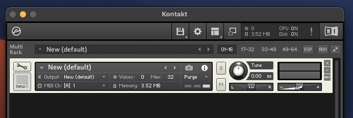
Open the new Kontakt instrument by clicking the wrench icon:
Open the Group Editor and Mapping Editor, then drag and drop all the Manther samples into the Mapping Editor.
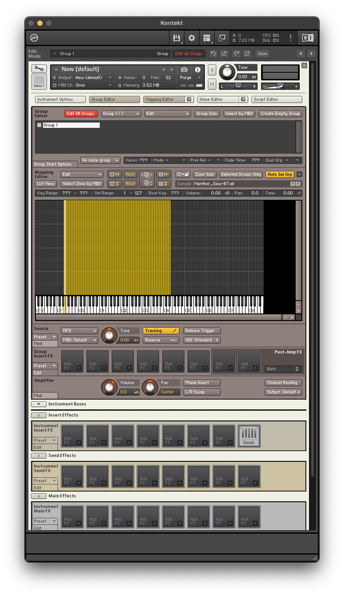
For the next step, it will be helpful to setup the mapping editor to only show the Zones (samples) of the currently selected group by turning on “Selected Groups Only”.
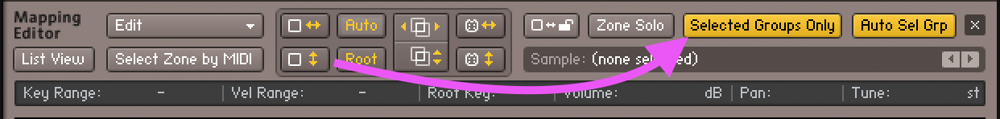
Note
With all the Zones (samples) of the default group, “Group 1”, selected in the Mapping Editor, click “Edit” and select “Auto-map Setup…”
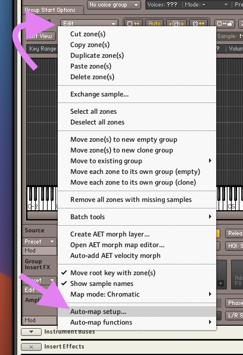
Note
Note
Match your setup to the image below:
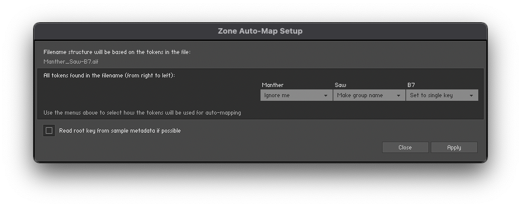
Click “Apply”.
Note
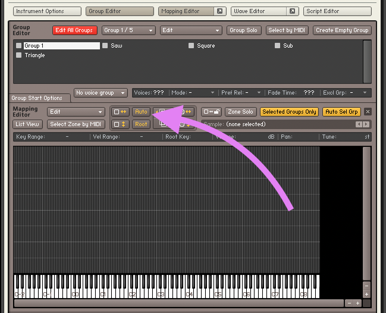
Once “Group 1” is empty, it can be deleted.
Note
With all your samples mapped to their original key and organized into logic groups, work your way through each group, extending each Zone’s key area so that all notes will trigger one of our samples.
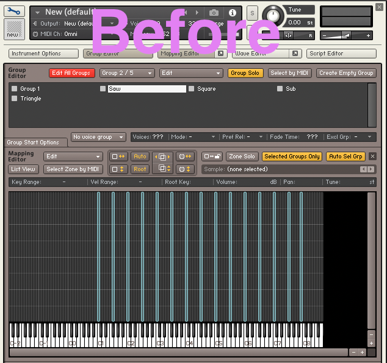
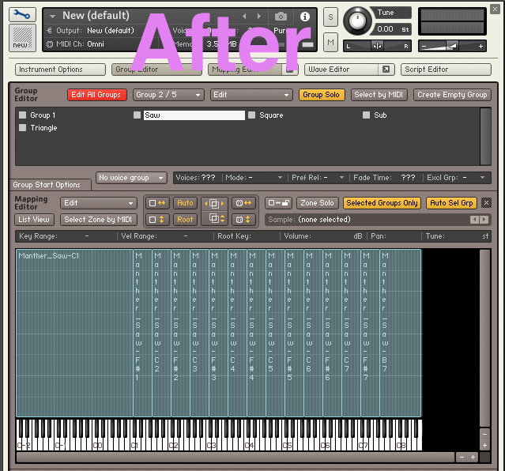
Note
Now with all of your Zones mapped to cover the full range of the MIDI keyboard and all velocities, enable “Group Solo” in the Group Editor, so that when you play a note, you will only hear the sound of the currently selected Group. With “Group Solo” enabled, work your way through each group making sure that all your samples are mapped correctly and producing the correct notes.
Creating the “Resource Folder”
First, Save your instrument as “MFA_Manther_YourName” within a folder on your computer’s Desktop that has the same name. Be sure to save the “Patch + Samples” inside the folder you create.
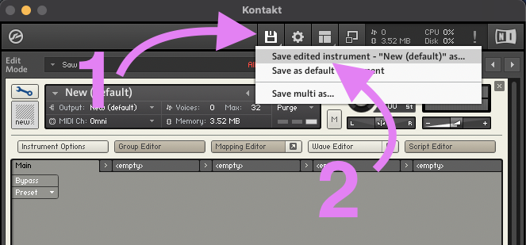
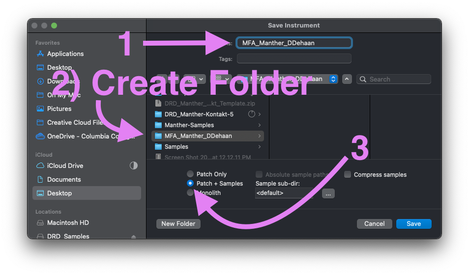
If you have not already, return to the Instrument Edit view by clicking the wrench icon, then open the Instrument Options window.
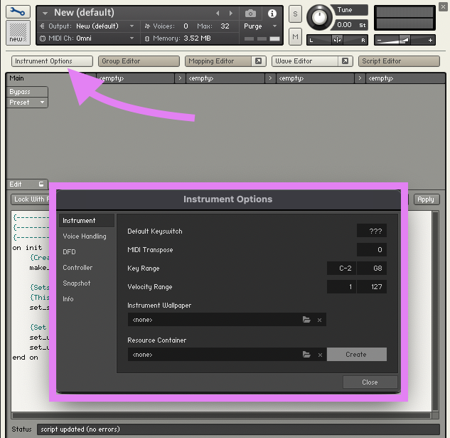
Near the lower right corner of the “Instrument” tab, click the “Create” button to create a Resource Container folder for your instrument. Save the Resource Container with the same name you saved your instrument.
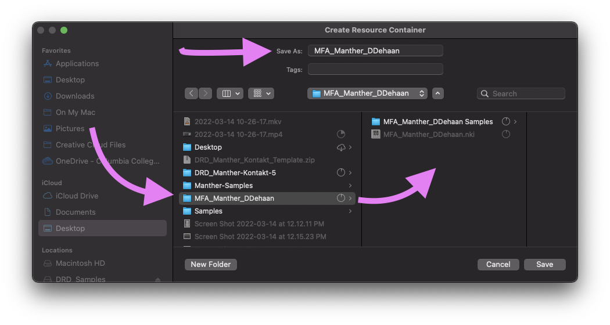
Click “Yes”, when Kontakt says, “No resource folder structure found. Would you like to create one?”
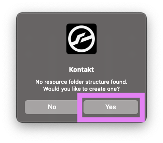
Kontakt will then give you a report, showing everything that is currently contained inside the new resource folder (which is nothing). We’ll add a few things in a moment. So you can just click “OK” for now.
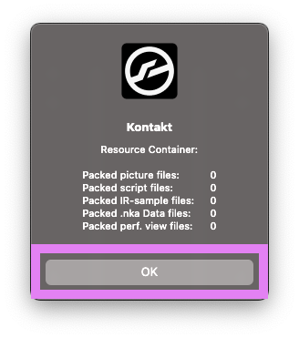
Take a moment to review the contents of your instruments folder. It should look similar to the image below.
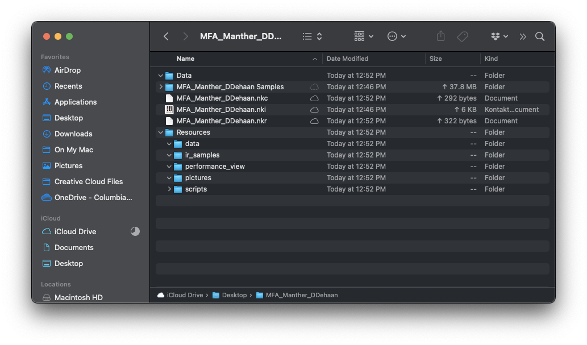
Setting Up Sublime Text for KSP Scripting
⚠️ If you are already using VS Code you may continue to use that rather than Sublime text. They are virtually the same.
⚠️ ⚠️ If you have Creator Tools open in the background then any time this guide tells you to “copy, paste, and apply” edits to your script. You can replace that step with simply saving in your script editor (VS Code or Sublime Text) and letting Creator Tools automatically apply those saved changes to your Kontakt instrument.
Press Command+Shift+P (Mac) or Control+Shift+P (Windows)
Type “Install Package Control” and press Return
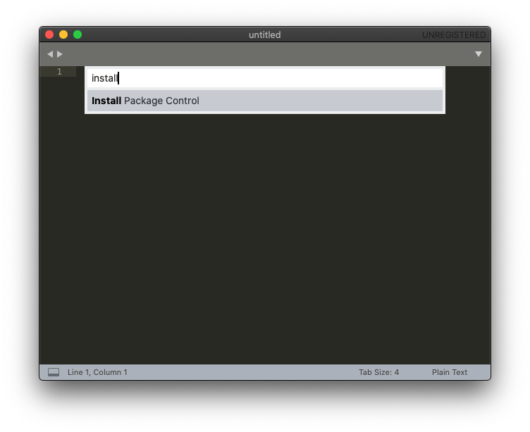
After the “Package Control” has successfully installed, press Command+Shift+P (Mac) or Control+Shift+P (Windows) again and type “Install Package” and press the Return key.
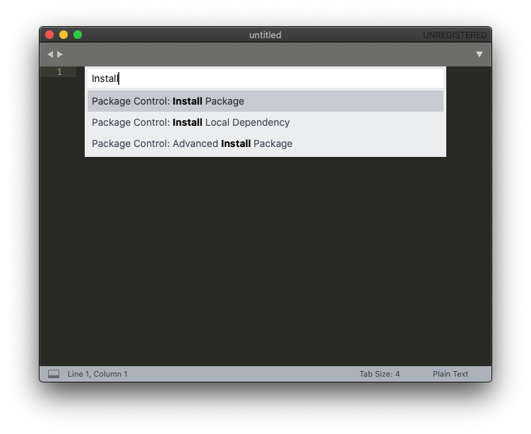
Next, in the same search bar, type “KSP”
Select “KSP (Kontakt Script Processor)” from the search results and press Return.
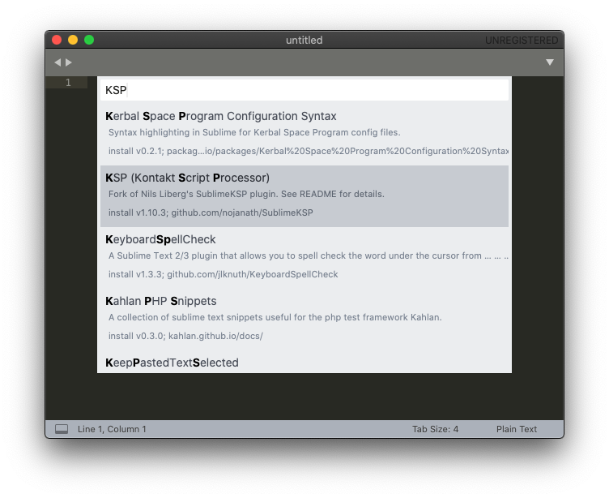
Start a new file in Sublime Text
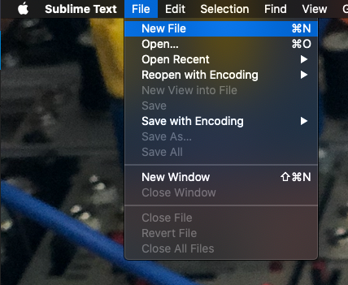
Click in the lower-right corner of the new window and set the new file’s syntax to be “KSP”
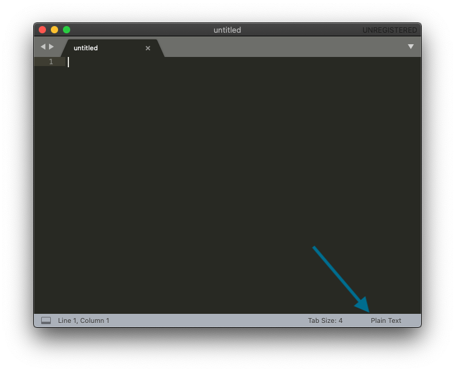
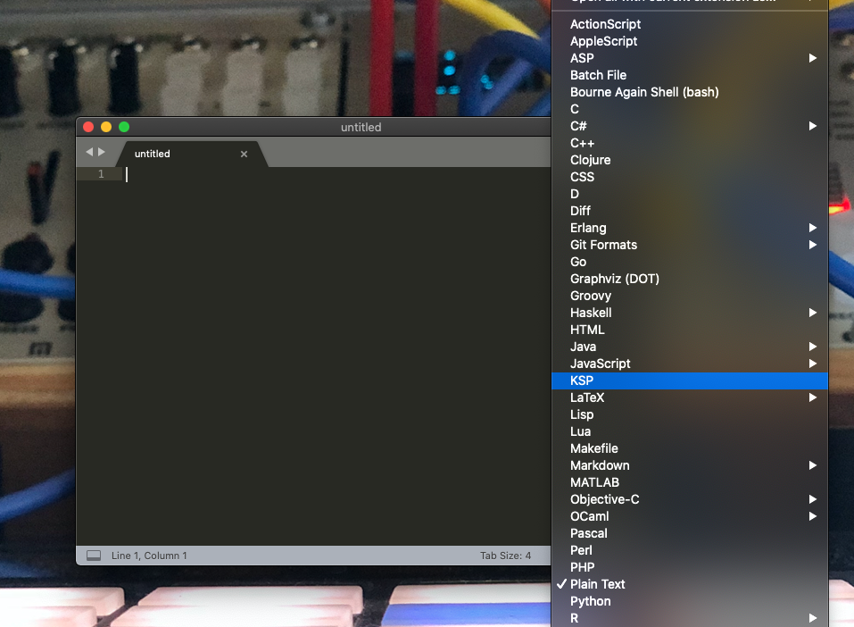
That’s it! Sublime Text is now ready for creating Kontakt scripts. Now that Sublime Text is configured, you will only need to repeat steps 8 and 9 every time you start a new Kontakt script.
Creating a Custom UI - Performance View
In your empty Sublime Text script type the following code:
{----------------------------------------------------------------}{--------------------When the instrument loads-------------------}{----------------------------------------------------------------}on init {Create a Performance View for this Script} make_perfview {Sets the tab title for this script's performance view} {This is useful if you have multiple scripts with performance views} set_script_title("Main") {Set the height and width of the performance view in pixels} set_ui_height_px(205) set_ui_width_px(633)end on
When you are done, Save your script to the “scripts” folder within your instrument’s Resource folder (I usually save it with the same name as the instrument). Then copy and paste the code into the first slot in your Kontakt Instrument’s Script Editor. Then click “apply”.
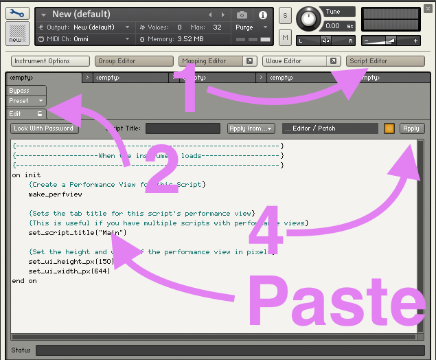
Now, if you click the wrench icon again, to leave the Instrument Edit view, you should now see that your instrument has a performance view that is 200 pixels tall by 634 pixels wide.
Note
Hint:
Save the “Patch Only” for your instrument and add a version number to the file name. This way, if you make a major mistake in the future you can alway jump back to a previous version of the instrument.
Adding a Custom Background
Download and add all the following files to the “pictures” folder within your instrument’s “Resources” folder.
After the line set_script_title(”Main”), add the following two lines of code to you Sublime text script, then copy, paste, and apply them to your Kontakt Instrument.
{Sets the Instrument's Wallpaper picture}set_control_par_str($INST_WALLPAPER_ID,$CONTROL_PAR_PICTURE,"DRD_Manther_Main_Background")
Note
View updated script:
{----------------------------------------------------------------}{--------------------When the instrument loads-------------------}{----------------------------------------------------------------}on init {Create a Performance View for this Script} make_perfview {Sets the tab title for this script's performance view} {This is useful if you have multiple scripts with performance views} set_script_title("Main") {Sets the Instrument's Wallpaper picture} set_control_par_str($INST_WALLPAPER_ID,$CONTROL_PAR_PICTURE,"DRD_Manther_Main_Background") {Set the height and width of the performance view in pixels} set_ui_height_px(205) set_ui_width_px(633)end on
Exit the Instrument Edit view by click the wrench icon, and confirm that you now have an image as your instrument’s background.
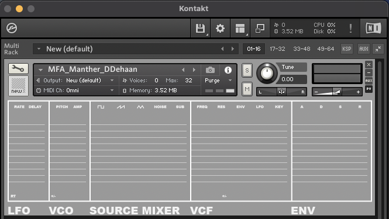
Note
Hint:
Save the “Patch Only” for your instrument and add a version number to the file name. This way, if you make a major mistake in the future you can alway jump back to a previous version of the instrument.
Adding a Custom Instrument Icon
Just below the two lines of code you added in the previous section, add the following two lines of code to you Sublime text script, then copy, paste, and apply them to your Kontakt Instrument.
{Sets the Instrument's Icon picture}set_control_par_str($INST_ICON_ID,$CONTROL_PAR_PICTURE,"DRD Instrument Icon")
Note
View updated script:
{----------------------------------------------------------------}{--------------------When the instrument loads-------------------}{----------------------------------------------------------------}on init {Create a Performance View for this Script} make_perfview {Sets the tab title for this script's performance view} {This is useful if you have multiple scripts with performance views} set_script_title("Main") {Sets the Instrument's Wallpaper picture} set_control_par_str($INST_WALLPAPER_ID,$CONTROL_PAR_PICTURE,"DRD_Manther_Main_Background") {Sets the Instrument's Icon picture} set_control_par_str($INST_ICON_ID,$CONTROL_PAR_PICTURE,"DRD Instrument Icon") {Set the height and width of the performance view in pixels} set_ui_height_px(205) set_ui_width_px(633)end on
You instrument should now have a custom Instrument Icon picture.
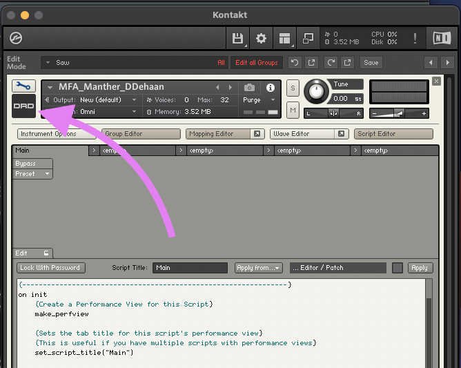
Note
Hint:
Save the “Patch Only” for your instrument and add a version number to the file name. This way, if you make a major mistake in the future you can alway jump back to a previous version of the instrument.
Adding Custom Controls
Just above the “end on” line add the following lines of code to create three sliders which we will eventually use to control the volume of each of our instrument’s groups.
{Custom sliders for controlling each Group's volume}declare ui_slider $Saw_Volume (0,1000000)declare ui_slider $Square_Volume (0,1000000)declare ui_slider $Triangle_Volume (0,1000000)declare ui_slider $Sub_Volume (0,1000000)
Note
View updated script:
{----------------------------------------------------------------}{--------------------When the instrument loads-------------------}{----------------------------------------------------------------}on init {Create a Performance View for this Script} make_perfview {Sets the tab title for this script's performance view} {This is useful if you have multiple scripts with performance views} set_script_title("Main") {Sets the Instrument's Wallpaper picture} set_control_par_str($INST_WALLPAPER_ID,$CONTROL_PAR_PICTURE,"DRD_Manther_Main_Background") {Sets the Instrument's Icon picture} set_control_par_str($INST_ICON_ID,$CONTROL_PAR_PICTURE,"DRD Instrument Icon") {Set the height and width of the performance view in pixels} set_ui_height_px(205) set_ui_width_px(633) {Custom sliders for controlling each Group's volume} declare ui_slider $Saw_Volume (0,1000000) declare ui_slider $Square_Volume (0,1000000) declare ui_slider $Triangle_Volume (0,1000000) declare ui_slider $Sub_Volume (0,1000000)end on
Copy, paste, and apply your updated script to your Kontakt Instrument. You should now see three sliders on your performance view.
Now let’s change their appearance. Above “end on” add the following lines of code. Then copy, paste, and apply them to your Kontakt instrument.
{Enables Kontakt to store the value of this slider when saving the instrument or a snapshot}make_persistent($Saw_Volume){Enables Kontakt to recall the value of this slider when loading the instrument or a snapshot}read_persistent_var($Saw_Volume){Stores the ID number of the slider in a variable so it is easier to reference elsewhere within this script}declare $Saw_Volume_ID := get_ui_id($Saw_Volume)set_control_par_str($Saw_Volume_ID, $CONTROL_PAR_PICTURE, "Slider_Vertical")make_persistent($Square_Volume)read_persistent_var($Square_Volume)declare $Square_Volume_ID := get_ui_id($Square_Volume)set_control_par_str($Square_Volume_ID, $CONTROL_PAR_PICTURE, "Slider_Vertical")make_persistent($Triangle_Volume)read_persistent_var($Triangle_Volume)declare $Triangle_Volume_ID := get_ui_id($Triangle_Volume)set_control_par_str($Triangle_Volume_ID, $CONTROL_PAR_PICTURE, "Slider_Vertical")make_persistent($Sub_Volume)read_persistent_var($Sub_Volume)declare $Sub_Volume_ID := get_ui_id($Sub_Volume)set_control_par_str($Sub_Volume_ID, $CONTROL_PAR_PICTURE, "Slider_Vertical")
Note
View updated script:
{----------------------------------------------------------------}{--------------------When the instrument loads-------------------}{----------------------------------------------------------------}on init {Create a Performance View for this Script} make_perfview {Sets the tab title for this script's performance view} {This is useful if you have multiple scripts with performance views} set_script_title("Main") {Sets the Instrument's Wallpaper picture} set_control_par_str($INST_WALLPAPER_ID,$CONTROL_PAR_PICTURE,"DRD_Manther_Main_Background") {Sets the Instrument's Icon picture} set_control_par_str($INST_ICON_ID,$CONTROL_PAR_PICTURE,"DRD Instrument Icon") {Set the height and width of the performance view in pixels} set_ui_height_px(205) set_ui_width_px(633) {Custom sliders for controlling each Group's volume} declare ui_slider $Saw_Volume (0,1000000) declare ui_slider $Square_Volume (0,1000000) declare ui_slider $Triangle_Volume (0,1000000) declare ui_slider $Sub_Volume (0,1000000) {Enables Kontakt to store the value of this slider when saving the instrument or a snapshot} make_persistent($Saw_Volume) {Enables Kontakt to recall the value of this slider when loading the instrument or a snapshot} read_persistent_var($Saw_Volume) {Stores the ID number of the slider in a variable so it is easier to reference elsewhere within this script} declare $Saw_Volume_ID := get_ui_id($Saw_Volume) set_control_par_str($Saw_Volume_ID, $CONTROL_PAR_PICTURE, "Slider_Vertical") make_persistent($Square_Volume) read_persistent_var($Square_Volume) declare $Square_Volume_ID := get_ui_id($Square_Volume) set_control_par_str($Square_Volume_ID, $CONTROL_PAR_PICTURE, "Slider_Vertical") make_persistent($Triangle_Volume) read_persistent_var($Triangle_Volume) declare $Triangle_Volume_ID := get_ui_id($Triangle_Volume) set_control_par_str($Triangle_Volume_ID, $CONTROL_PAR_PICTURE, "Slider_Vertical") make_persistent($Sub_Volume) read_persistent_var($Sub_Volume) declare $Sub_Volume_ID := get_ui_id($Sub_Volume) set_control_par_str($Sub_Volume_ID, $CONTROL_PAR_PICTURE, "Slider_Vertical")end on
Try clicking and dragging your pretty new sliders…you will probably notice they behave strangely and that is because they still think they are horizontal sliders, not vertical sliders. So let’s change that…
Above the “end on” line, add the following lines of code. Then copy, paste, and apply the updated script to you Kontakt instrument.
{Set the Mouse Behaviour of the volume sliders}set_control_par($Saw_Volume_ID, $CONTROL_PAR_MOUSE_BEHAVIOUR,-2000)set_control_par($Square_Volume_ID, $CONTROL_PAR_MOUSE_BEHAVIOUR,-2000)set_control_par($Triangle_Volume_ID, $CONTROL_PAR_MOUSE_BEHAVIOUR,-2000)set_control_par($Sub_Volume_ID, $CONTROL_PAR_MOUSE_BEHAVIOUR,-2000)
Note
View updated script:
{----------------------------------------------------------------}{--------------------When the instrument loads-------------------}{----------------------------------------------------------------}on init {Create a Performance View for this Script} make_perfview {Sets the tab title for this script's performance view} {This is useful if you have multiple scripts with performance views} set_script_title("Main") {Sets the Instrument's Wallpaper picture} set_control_par_str($INST_WALLPAPER_ID,$CONTROL_PAR_PICTURE,"DRD_Manther_Main_Background") {Sets the Instrument's Icon picture} set_control_par_str($INST_ICON_ID,$CONTROL_PAR_PICTURE,"DRD Instrument Icon") {Set the height and width of the performance view in pixels} set_ui_height_px(205) set_ui_width_px(633) {Custom sliders for controlling each Group's volume} declare ui_slider $Saw_Volume (0,1000000) declare ui_slider $Square_Volume (0,1000000) declare ui_slider $Triangle_Volume (0,1000000) declare ui_slider $Sub_Volume (0,1000000) {Enables Kontakt to store the value of this slider when saving the instrument or a snapshot} make_persistent($Saw_Volume) {Enables Kontakt to recall the value of this slider when loading the instrument or a snapshot} read_persistent_var($Saw_Volume) {Stores the ID number of the slider in a variable so it is easier to reference elsewhere within this script} declare $Saw_Volume_ID := get_ui_id($Saw_Volume) set_control_par_str($Saw_Volume_ID, $CONTROL_PAR_PICTURE, "Slider_Vertical") make_persistent($Square_Volume) read_persistent_var($Square_Volume) declare $Square_Volume_ID := get_ui_id($Square_Volume) set_control_par_str($Square_Volume_ID, $CONTROL_PAR_PICTURE, "Slider_Vertical") make_persistent($Triangle_Volume) read_persistent_var($Triangle_Volume) declare $Triangle_Volume_ID := get_ui_id($Triangle_Volume) set_control_par_str($Triangle_Volume_ID, $CONTROL_PAR_PICTURE, "Slider_Vertical") make_persistent($Sub_Volume) read_persistent_var($Sub_Volume) declare $Sub_Volume_ID := get_ui_id($Sub_Volume) set_control_par_str($Sub_Volume_ID, $CONTROL_PAR_PICTURE, "Slider_Vertical") {Set the Mouse Behaviour of the volume sliders} set_control_par($Saw_Volume_ID, $CONTROL_PAR_MOUSE_BEHAVIOUR,-2000) set_control_par($Square_Volume_ID, $CONTROL_PAR_MOUSE_BEHAVIOUR,-2000) set_control_par($Triangle_Volume_ID, $CONTROL_PAR_MOUSE_BEHAVIOUR,-2000) set_control_par($Sub_Volume_ID, $CONTROL_PAR_MOUSE_BEHAVIOUR,-2000)end on
Note
Hint:
Save the “Patch Only” for your instrument and add a version number to the file name. This way, if you make a major mistake in the future you can alway jump back to a previous version of the instrument.
Positioning Controls on the GUI
Just above the “end on” line, add the following lines of code. Then copy, paste, and apply your updated script to your Kontakt instrument.
{Set the location of the UI controls in pixels}{move_control_px($name_of_ui_control, x position, y position)}move_control_px($Saw_Volume, 179, 30)move_control_px($Square_Volume, 143, 30)move_control_px($Triangle_Volume, 215, 30)move_control_px($Sub_Volume, 280, 30)
Note
View updated script:
{----------------------------------------------------------------}{--------------------When the instrument loads-------------------}{----------------------------------------------------------------}on init {Create a Performance View for this Script} make_perfview {Sets the tab title for this script's performance view} {This is useful if you have multiple scripts with performance views} set_script_title("Main") {Sets the Instrument's Wallpaper picture} set_control_par_str($INST_WALLPAPER_ID,$CONTROL_PAR_PICTURE,"DRD_Manther_Main_Background") {Sets the Instrument's Icon picture} set_control_par_str($INST_ICON_ID,$CONTROL_PAR_PICTURE,"DRD Instrument Icon") {Set the height and width of the performance view in pixels} set_ui_height_px(205) set_ui_width_px(633) {Custom sliders for controlling each Group's volume} declare ui_slider $Saw_Volume (0,1000000) declare ui_slider $Square_Volume (0,1000000) declare ui_slider $Triangle_Volume (0,1000000) declare ui_slider $Sub_Volume (0,1000000) {Enables Kontakt to store the value of this slider when saving the instrument or a snapshot} make_persistent($Saw_Volume) {Enables Kontakt to recall the value of this slider when loading the instrument or a snapshot} read_persistent_var($Saw_Volume) {Stores the ID number of the slider in a variable so it is easier to reference elsewhere within this script} declare $Saw_Volume_ID := get_ui_id($Saw_Volume) set_control_par_str($Saw_Volume_ID, $CONTROL_PAR_PICTURE, "Slider_Vertical") make_persistent($Square_Volume) read_persistent_var($Square_Volume) declare $Square_Volume_ID := get_ui_id($Square_Volume) set_control_par_str($Square_Volume_ID, $CONTROL_PAR_PICTURE, "Slider_Vertical") make_persistent($Triangle_Volume) read_persistent_var($Triangle_Volume) declare $Triangle_Volume_ID := get_ui_id($Triangle_Volume) set_control_par_str($Triangle_Volume_ID, $CONTROL_PAR_PICTURE, "Slider_Vertical") make_persistent($Sub_Volume) read_persistent_var($Sub_Volume) declare $Sub_Volume_ID := get_ui_id($Sub_Volume) set_control_par_str($Sub_Volume_ID, $CONTROL_PAR_PICTURE, "Slider_Vertical") {Set the Mouse Behaviour of the volume sliders} set_control_par($Saw_Volume_ID, $CONTROL_PAR_MOUSE_BEHAVIOUR,-2000) set_control_par($Square_Volume_ID, $CONTROL_PAR_MOUSE_BEHAVIOUR,-2000) set_control_par($Triangle_Volume_ID, $CONTROL_PAR_MOUSE_BEHAVIOUR,-2000) set_control_par($Sub_Volume_ID, $CONTROL_PAR_MOUSE_BEHAVIOUR,-2000) {Set the location of the UI controls} move_control_px($Saw_Volume, 179, 30) move_control_px($Square_Volume, 143, 30) move_control_px($Triangle_Volume, 215, 30) move_control_px($Sub_Volume, 280, 30)end on
Note
Hint:
Save the “Patch Only” for your instrument and add a version number to the file name. This way, if you make a major mistake in the future you can alway jump back to a previous version of the instrument.
Controlling Each Group’s Volume
Below the on init sections “end on”, add the following lines of code:
{----------------------------------------------------------------}{----------When a specific ui control is manipulated-------------}{----------------------------------------------------------------}{Set the Saw Group's Volume when the corrisponding slider is manipulated}on ui_control ($Saw_Volume) set_engine_par($ENGINE_PAR_VOLUME, $Saw_Volume, find_group("Saw"), 0, -1)end on{Set the Square Group's Volume when the corrisponding slider is manipulated}on ui_control ($Square_Volume) set_engine_par($ENGINE_PAR_VOLUME, $Square_Volume, find_group("Square"), 0, -1)end on{Set the Triangle Group's Volume when the corrisponding slider is manipulated}on ui_control ($Triangle_Volume) set_engine_par($ENGINE_PAR_VOLUME, $Triangle_Volume, find_group("Triangle"), 0, -1)end on{Set the Sub Group's Volume when the corrisponding slider is manipulated}on ui_control ($Sub_Volume) set_engine_par($ENGINE_PAR_VOLUME, $Sub_Volume, find_group("Sub"), 0, -1)end on
Note
View updated script:
{----------------------------------------------------------------}{--------------------When the instrument loads-------------------}{----------------------------------------------------------------}on init {Create a Performance View for this Script} make_perfview {Sets the tab title for this script's performance view} {This is useful if you have multiple scripts with performance views} set_script_title("Main") {Sets the Instrument's Wallpaper picture} set_control_par_str($INST_WALLPAPER_ID,$CONTROL_PAR_PICTURE,"DRD_Manther_Main_Background") {Sets the Instrument's Icon picture} set_control_par_str($INST_ICON_ID,$CONTROL_PAR_PICTURE,"DRD Instrument Icon") {Set the height and width of the performance view in pixels} set_ui_height_px(205) set_ui_width_px(633) {Custom sliders for controlling each Group's volume} declare ui_slider $Saw_Volume (0,1000000) declare ui_slider $Square_Volume (0,1000000) declare ui_slider $Triangle_Volume (0,1000000) declare ui_slider $Sub_Volume (0,1000000) {Enables Kontakt to store the value of this slider when saving the instrument or a snapshot} make_persistent($Saw_Volume) {Enables Kontakt to recall the value of this slider when loading the instrument or a snapshot} read_persistent_var($Saw_Volume) {Stores the ID number of the slider in a variable so it is easier to reference elsewhere within this script} declare $Saw_Volume_ID := get_ui_id($Saw_Volume) set_control_par_str($Saw_Volume_ID, $CONTROL_PAR_PICTURE, "Slider_Vertical") make_persistent($Square_Volume) read_persistent_var($Square_Volume) declare $Square_Volume_ID := get_ui_id($Square_Volume) set_control_par_str($Square_Volume_ID, $CONTROL_PAR_PICTURE, "Slider_Vertical") make_persistent($Triangle_Volume) read_persistent_var($Triangle_Volume) declare $Triangle_Volume_ID := get_ui_id($Triangle_Volume) set_control_par_str($Triangle_Volume_ID, $CONTROL_PAR_PICTURE, "Slider_Vertical") make_persistent($Sub_Volume) read_persistent_var($Sub_Volume) declare $Sub_Volume_ID := get_ui_id($Sub_Volume) set_control_par_str($Sub_Volume_ID, $CONTROL_PAR_PICTURE, "Slider_Vertical") {Set the Mouse Behaviour of the volume sliders} set_control_par($Saw_Volume_ID, $CONTROL_PAR_MOUSE_BEHAVIOUR,-2000) set_control_par($Square_Volume_ID, $CONTROL_PAR_MOUSE_BEHAVIOUR,-2000) set_control_par($Triangle_Volume_ID, $CONTROL_PAR_MOUSE_BEHAVIOUR,-2000) set_control_par($Sub_Volume_ID, $CONTROL_PAR_MOUSE_BEHAVIOUR,-2000) {Set the location of the UI controls} move_control_px($Saw_Volume, 179, 30) move_control_px($Square_Volume, 143, 30) move_control_px($Triangle_Volume, 215, 30) move_control_px($Sub_Volume, 280, 30)end on{----------------------------------------------------------------}{------------------When a Slider is Manipulated------------------}{----------------------------------------------------------------}{Set the Saw Group's Volume when the corrisponding slider is manipulated}on ui_control ($Saw_Volume) set_engine_par($ENGINE_PAR_VOLUME, $Saw_Volume, find_group("Saw"), 0, -1)end on{Set the Square Group's Volume when the corrisponding slider is manipulated}on ui_control ($Square_Volume) set_engine_par($ENGINE_PAR_VOLUME, $Square_Volume, find_group("Square"), 0, -1)end on{Set the Triangle Group's Volume when the corrisponding slider is manipulated}on ui_control ($Triangle_Volume) set_engine_par($ENGINE_PAR_VOLUME, $Triangle_Volume, find_group("Triangle"), 0, -1)end on{Set the Sub Group's Volume when the corrisponding slider is manipulated}on ui_control ($Sub_Volume) set_engine_par($ENGINE_PAR_VOLUME, $Sub_Volume, find_group("Sub"), 0, -1)end on
Copy, paste, and apply your updated script to your Kontakt instrument.
Test it out!
Note
Note
Hint:
Save the “Patch Only” for your instrument and add a version number to the file name. This way, if you make a major mistake in the future you can alway jump back to a previous version of the instrument.
Modulation in Kontakt
Before continuing on, take a few minutes to learn about modulation in Kontakt.
Adding ADSR Controls
Begin by declaring four new ui_sliders just under our four volume sliders in the on_init callback.
{----------------------------------------------------------------}{--------------------When the instrument loads-------------------}{----------------------------------------------------------------}on init {Create a Performance View for this Script} make_perfview {Sets the tab title for this script's performance view} {This is useful if you have multiple scripts with performance views} set_script_title("Main") {Sets the Instrument's Wallpaper picture} set_control_par_str($INST_WALLPAPER_ID,$CONTROL_PAR_PICTURE,"DRD_Manther_Main_Background") {Sets the Instrument's Icon picture} set_control_par_str($INST_ICON_ID,$CONTROL_PAR_PICTURE,"DRD Instrument Icon") {Set the height and width of the performance view in pixels} set_ui_height_px(205) set_ui_width_px(633) {Custom sliders for controlling each Group's volume} declare ui_slider $Saw_Volume (0,1000000) declare ui_slider $Square_Volume (0,1000000) declare ui_slider $Triangle_Volume (0,1000000) declare ui_slider $Sub_Volume (0,1000000) {Custom sliders for controlling each Group's ADSR Envelop} declare ui_slider $Env_Attack (0, 1000000) declare ui_slider $Env_Decay (0, 1000000) declare ui_slider $Env_Sustain (0, 1000000) declare ui_slider $Env_Release (0, 1000000) {Enables Kontakt to store the value of this slider when saving the instrument or a snapshot} make_persistent($Saw_Volume) {Enables Kontakt to recall the value of this slider when loading the instrument or a snapshot} read_persistent_var($Saw_Volume) {Stores the ID number of the slider in a variable so it is easier to reference elsewhere within this script} declare $Saw_Volume_ID := get_ui_id($Saw_Volume) set_control_par_str($Saw_Volume_ID, $CONTROL_PAR_PICTURE, "Slider_Vertical") make_persistent($Square_Volume) read_persistent_var($Square_Volume) declare $Square_Volume_ID := get_ui_id($Square_Volume) set_control_par_str($Square_Volume_ID, $CONTROL_PAR_PICTURE, "Slider_Vertical") make_persistent($Triangle_Volume) read_persistent_var($Triangle_Volume) declare $Triangle_Volume_ID := get_ui_id($Triangle_Volume) set_control_par_str($Triangle_Volume_ID, $CONTROL_PAR_PICTURE, "Slider_Vertical") make_persistent($Sub_Volume) read_persistent_var($Sub_Volume) declare $Sub_Volume_ID := get_ui_id($Sub_Volume) set_control_par_str($Sub_Volume_ID, $CONTROL_PAR_PICTURE, "Slider_Vertical") make_persistent($Env_Attack) read_persistent_var($Env_Attack) declare $Env_Attack_ID := get_ui_id($Env_Attack) set_control_par_str($Env_Attack_ID, $CONTROL_PAR_PICTURE, "Slider_Vertical") make_persistent($Env_Decay) read_persistent_var($Env_Decay) declare $Env_Decay_ID := get_ui_id($Env_Decay) set_control_par_str($Env_Decay_ID, $CONTROL_PAR_PICTURE, "Slider_Vertical") make_persistent($Env_Sustain) read_persistent_var($Env_Sustain) declare $Env_Sustain_ID := get_ui_id($Env_Sustain) set_control_par_str($Env_Sustain_ID, $CONTROL_PAR_PICTURE, "Slider_Vertical") make_persistent($Env_Release) read_persistent_var($Env_Release) declare $Env_Release_ID := get_ui_id($Env_Release) set_control_par_str($Env_Release_ID, $CONTROL_PAR_PICTURE, "Slider_Vertical") set_control_par($Saw_Volume_ID, $CONTROL_PAR_MOUSE_BEHAVIOUR,-2000) set_control_par($Square_Volume_ID, $CONTROL_PAR_MOUSE_BEHAVIOUR,-2000) set_control_par($Triangle_Volume_ID, $CONTROL_PAR_MOUSE_BEHAVIOUR,-2000) set_control_par($Sub_Volume_ID, $CONTROL_PAR_MOUSE_BEHAVIOUR,-2000) set_control_par($Env_Attack_ID, $CONTROL_PAR_MOUSE_BEHAVIOUR,-2000) set_control_par($Env_Decay_ID, $CONTROL_PAR_MOUSE_BEHAVIOUR,-2000) set_control_par($Env_Sustain_ID, $CONTROL_PAR_MOUSE_BEHAVIOUR,-2000) set_control_par($Env_Release_ID, $CONTROL_PAR_MOUSE_BEHAVIOUR,-2000) {Set the location of the UI controls} move_control_px($Saw_Volume, 179, 30) move_control_px($Square_Volume, 143, 30) move_control_px($Triangle_Volume, 215, 30) move_control_px($Sub_Volume, 280, 30) move_control_px($Env_Attack, 487, 30) move_control_px($Env_Decay, 520, 30) move_control_px($Env_Sustain, 553, 30) move_control_px($Env_Release, 587, 30)end on{----------------------------------------------------------------}{------------------When a Slider is Manipulated------------------}{----------------------------------------------------------------}{Set the Saw Group's Volume when the corrisponding slider is manipulated}on ui_control ($Saw_Volume) set_engine_par($ENGINE_PAR_VOLUME, $Saw_Volume, find_group("Saw"), 0, -1)end on{Set the Square Group's Volume when the corrisponding slider is manipulated}on ui_control ($Square_Volume) set_engine_par($ENGINE_PAR_VOLUME, $Square_Volume, find_group("Square"), 0, -1)end on{Set the Triangle Group's Volume when the corrisponding slider is manipulated}on ui_control ($Triangle_Volume) set_engine_par($ENGINE_PAR_VOLUME, $Triangle_Volume, find_group("Triangle"), 0, -1)end on{Set the Sub Group's Volume when the corrisponding slider is manipulated}on ui_control ($Sub_Volume) set_engine_par($ENGINE_PAR_VOLUME, $Sub_Volume, find_group("Sub"), 0, -1)end on
Copy, paste, and apply your updated script to your Kontakt instrument.
Before we can begin to control a modulation source, we need to first know what it is called. Make sure that “Edit all Groups” is turned on, then navigate to the bottom of your Kontakt instrument and right-click on the Volume AHSDR modulation source. At the bottom of the dropdown menu you can see the name currently given to this modulation source and its current group, index, and generic ID numbers. If yours is not already, rename it to “AHDSR_VOLUME” by clicking on its current name in the dropdown menu.
⚠️ If you only see the option to delete the modulation source when you right-click on it…scroll up and make sure that the Script Editor window is open and you can see your script.
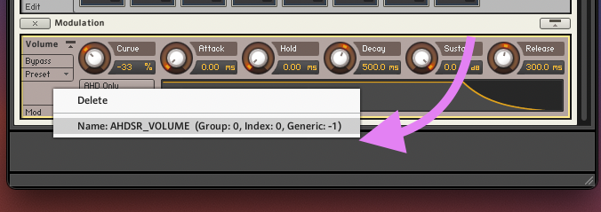
In your on_init callback declare a new integer variable called “count”, like below…
on init {Create a Performance View for this Script} make_perfview {Sets the tab title for this script's performance view} {This is useful if you have multiple scripts with performance views} set_script_title("Main") {Sets the Instrument's Wallpaper picture} set_control_par_str($INST_WALLPAPER_ID,$CONTROL_PAR_PICTURE,"DRD_Manther_Main_Background") {Sets the Instrument's Icon picture} set_control_par_str($INST_ICON_ID,$CONTROL_PAR_PICTURE,"DRD Instrument Icon") {Set the height and width of the performance view in pixels} set_ui_height_px(205) set_ui_width_px(633) declare $count ...
Then at the bottom of your script add the following lines of code to control each group’s AHDSR envelop with the new custom sliders that you just created.
on ui_control ($Env_Attack) $count := 0 while ($count < $NUM_GROUPS) set_engine_par($ENGINE_PAR_ATTACK, $Env_Attack, $count, find_mod($count,"AHDSR_VOLUME"), -1) inc($count) end whileend onon ui_control ($Env_Decay) $count := 0 while ($count < $NUM_GROUPS) set_engine_par($ENGINE_PAR_DECAY, $Env_Decay, $count, find_mod($count,"AHDSR_VOLUME"), -1) inc($count) end whileend onon ui_control ($Env_Sustain) $count := 0 while ($count < $NUM_GROUPS) set_engine_par($ENGINE_PAR_SUSTAIN, $Env_Sustain, $count, find_mod($count,"AHDSR_VOLUME"), -1) inc($count) end whileend onon ui_control ($Env_Release) $count := 0 while ($count < $NUM_GROUPS) set_engine_par($ENGINE_PAR_RELEASE, $Env_Release, $count, find_mod($count,"AHDSR_VOLUME"), -1) inc($count) end whileend on
Note
View updated script:
{----------------------------------------------------------------}{--------------------When the instrument loads-------------------}{----------------------------------------------------------------}on init {Create a Performance View for this Script} make_perfview {Sets the tab title for this script's performance view} {This is useful if you have multiple scripts with performance views} set_script_title("Main") {Sets the Instrument's Wallpaper picture} set_control_par_str($INST_WALLPAPER_ID,$CONTROL_PAR_PICTURE,"DRD_Manther_Main_Background") {Sets the Instrument's Icon picture} set_control_par_str($INST_ICON_ID,$CONTROL_PAR_PICTURE,"DRD Instrument Icon") {Set the height and width of the performance view in pixels} set_ui_height_px(205) set_ui_width_px(633) declare $count {Custom sliders for controlling each Group's volume} declare ui_slider $Saw_Volume (0,1000000) declare ui_slider $Square_Volume (0,1000000) declare ui_slider $Triangle_Volume (0,1000000) declare ui_slider $Sub_Volume (0,1000000) {Custom sliders for controlling each Group's ADSR Envelop} declare ui_slider $Env_Attack (0, 1000000) declare ui_slider $Env_Decay (0, 1000000) declare ui_slider $Env_Sustain (0, 1000000) declare ui_slider $Env_Release (0, 1000000) {Enables Kontakt to store the value of this slider when saving the instrument or a snapshot} make_persistent($Saw_Volume) {Enables Kontakt to recall the value of this slider when loading the instrument or a snapshot} read_persistent_var($Saw_Volume) {Stores the ID number of the slider in a variable so it is easier to reference elsewhere within this script} declare $Saw_Volume_ID := get_ui_id($Saw_Volume) set_control_par_str($Saw_Volume_ID, $CONTROL_PAR_PICTURE, "Slider_Vertical") make_persistent($Square_Volume) read_persistent_var($Square_Volume) declare $Square_Volume_ID := get_ui_id($Square_Volume) set_control_par_str($Square_Volume_ID, $CONTROL_PAR_PICTURE, "Slider_Vertical") make_persistent($Triangle_Volume) read_persistent_var($Triangle_Volume) declare $Triangle_Volume_ID := get_ui_id($Triangle_Volume) set_control_par_str($Triangle_Volume_ID, $CONTROL_PAR_PICTURE, "Slider_Vertical") make_persistent($Sub_Volume) read_persistent_var($Sub_Volume) declare $Sub_Volume_ID := get_ui_id($Sub_Volume) set_control_par_str($Sub_Volume_ID, $CONTROL_PAR_PICTURE, "Slider_Vertical") make_persistent($Env_Attack) read_persistent_var($Env_Attack) declare $Env_Attack_ID := get_ui_id($Env_Attack) set_control_par_str($Env_Attack_ID, $CONTROL_PAR_PICTURE, "Slider_Vertical") make_persistent($Env_Decay) read_persistent_var($Env_Decay) declare $Env_Decay_ID := get_ui_id($Env_Decay) set_control_par_str($Env_Decay_ID, $CONTROL_PAR_PICTURE, "Slider_Vertical") make_persistent($Env_Sustain) read_persistent_var($Env_Sustain) declare $Env_Sustain_ID := get_ui_id($Env_Sustain) set_control_par_str($Env_Sustain_ID, $CONTROL_PAR_PICTURE, "Slider_Vertical") make_persistent($Env_Release) read_persistent_var($Env_Release) declare $Env_Release_ID := get_ui_id($Env_Release) set_control_par_str($Env_Release_ID, $CONTROL_PAR_PICTURE, "Slider_Vertical") set_control_par($Saw_Volume_ID, $CONTROL_PAR_MOUSE_BEHAVIOUR,-2000) set_control_par($Square_Volume_ID, $CONTROL_PAR_MOUSE_BEHAVIOUR,-2000) set_control_par($Triangle_Volume_ID, $CONTROL_PAR_MOUSE_BEHAVIOUR,-2000) set_control_par($Sub_Volume_ID, $CONTROL_PAR_MOUSE_BEHAVIOUR,-2000) set_control_par($Env_Attack_ID, $CONTROL_PAR_MOUSE_BEHAVIOUR,-2000) set_control_par($Env_Decay_ID, $CONTROL_PAR_MOUSE_BEHAVIOUR,-2000) set_control_par($Env_Sustain_ID, $CONTROL_PAR_MOUSE_BEHAVIOUR,-2000) set_control_par($Env_Release_ID, $CONTROL_PAR_MOUSE_BEHAVIOUR,-2000) {Set the location of the UI controls} move_control_px($Saw_Volume, 179, 30) move_control_px($Square_Volume, 143, 30) move_control_px($Triangle_Volume, 215, 30) move_control_px($Sub_Volume, 280, 30) move_control_px($Env_Attack, 487, 30) move_control_px($Env_Decay, 520, 30) move_control_px($Env_Sustain, 553, 30) move_control_px($Env_Release, 587, 30)end on{----------------------------------------------------------------}{------------------When a Slider is Manipulated------------------}{----------------------------------------------------------------}{Set the Saw Group's Volume when the corrisponding slider is manipulated}on ui_control ($Saw_Volume) set_engine_par($ENGINE_PAR_VOLUME, $Saw_Volume, find_group("Saw"), 0, -1)end on{Set the Square Group's Volume when the corrisponding slider is manipulated}on ui_control ($Square_Volume) set_engine_par($ENGINE_PAR_VOLUME, $Square_Volume, find_group("Square"), 0, -1)end on{Set the Triangle Group's Volume when the corrisponding slider is manipulated}on ui_control ($Triangle_Volume) set_engine_par($ENGINE_PAR_VOLUME, $Triangle_Volume, find_group("Triangle"), 0, -1)end on{Set the Sub Group's Volume when the corrisponding slider is manipulated}on ui_control ($Sub_Volume) set_engine_par($ENGINE_PAR_VOLUME, $Sub_Volume, find_group("Sub"), 0, -1)end onon ui_control ($Env_Attack) $count := 0 while ($count < $NUM_GROUPS) set_engine_par($ENGINE_PAR_ATTACK, $Env_Attack, $count, find_mod($count,"AHDSR_VOLUME"), -1) inc($count) end whileend onon ui_control ($Env_Decay) $count := 0 while ($count < $NUM_GROUPS) set_engine_par($ENGINE_PAR_DECAY, $Env_Decay, $count, find_mod($count,"AHDSR_VOLUME"), -1) inc($count) end whileend onon ui_control ($Env_Sustain) $count := 0 while ($count < $NUM_GROUPS) set_engine_par($ENGINE_PAR_SUSTAIN, $Env_Sustain, $count, find_mod($count,"AHDSR_VOLUME"), -1) inc($count) end whileend onon ui_control ($Env_Release) $count := 0 while ($count < $NUM_GROUPS) set_engine_par($ENGINE_PAR_RELEASE, $Env_Release, $count, find_mod($count,"AHDSR_VOLUME"), -1) inc($count) end whileend on
Copy, paste, and apply your updated script to your Kontakt instrument.
Note
Note
Hint:
Save the “Patch Only” for your instrument and add a version number to the file name. This way, if you make a major mistake in the future you can alway jump back to a previous version of the instrument.
Drag the Manther_Noise.wav file into the Noise group and map it to the full range of the keyboard.
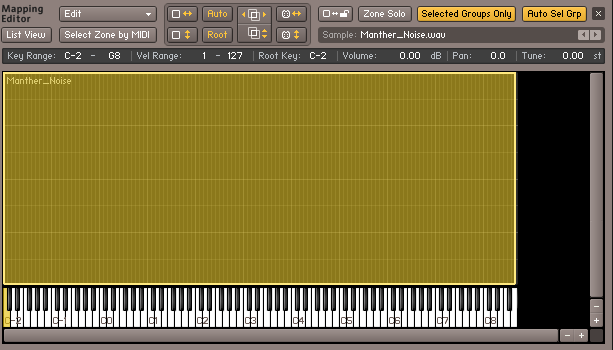
Disable “Tracking” within the Source panel. This makes it so that Kontakt will always play the sample back at its original rate regardless of which note it is triggered with.
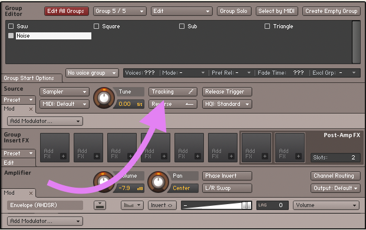
Note
Make sure that you only have the “Noise” group selected at the “Edit All Groups” is not turned on.
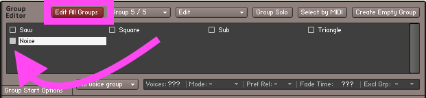
Find and right-click on the “Volume” knob within the “Amplifier” section.
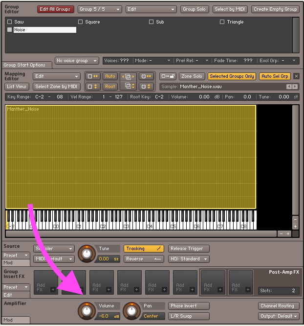
Add a new AHDSR Envelop to the “Volume” knob and rename it to “AHDSR_VOLUME” just like we did with the other AHDSR envelopes.
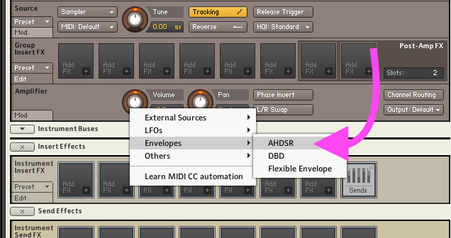
Finally, let’s add a slider to control the overall volume of the “Noise” group. In your on_init callback, declare a new ui_slider called $Noise_Volume.
declare ui_slider $Noise_Volume (0,1000000)
Then make/read the persistent values, create a new variable to store the slider I.D. number, and set the display picture of the new ui_slider.
Last, but not least, we need to define what happens when the user manipulated the new Noise with their mouse. So down near the bottom of the script create a new on ui_control callback to set the “Noise” groups volume to match the new value of the manipulated Noise slider.
{Set the Noise Group's Volume when the corrisponding slider is manipulated}on ui_control ($Noise_Volume) set_engine_par($ENGINE_PAR_VOLUME, $Noise_Volume, find_group("Noise"), 0, -1)end on
Note
View updated script:
{----------------------------------------------------------------}{--------------------When the instrument loads-------------------}{----------------------------------------------------------------}on init {Create a Performance View for this Script} make_perfview {Sets the tab title for this script's performance view} {This is useful if you have multiple scripts with performance views} set_script_title("Main") {Sets the Instrument's Wallpaper picture} set_control_par_str($INST_WALLPAPER_ID,$CONTROL_PAR_PICTURE,"DRD_Manther_Main_Background") {Sets the Instrument's Icon picture} set_control_par_str($INST_ICON_ID,$CONTROL_PAR_PICTURE,"DRD Instrument Icon") {Set the height and width of the performance view in pixels} set_ui_height_px(205) set_ui_width_px(633) declare $count {Custom sliders for controlling each Group's volume} declare ui_slider $Saw_Volume (0,1000000) declare ui_slider $Square_Volume (0,1000000) declare ui_slider $Triangle_Volume (0,1000000) declare ui_slider $Sub_Volume (0,1000000) declare ui_slider $Noise_Volume (0,1000000) {Custom sliders for controlling each Group's ADSR Envelop} declare ui_slider $Env_Attack (0, 1000000) declare ui_slider $Env_Decay (0, 1000000) declare ui_slider $Env_Sustain (0, 1000000) declare ui_slider $Env_Release (0, 1000000) {Enables Kontakt to store the value of this slider when saving the instrument or a snapshot} make_persistent($Saw_Volume) {Enables Kontakt to recall the value of this slider when loading the instrument or a snapshot} read_persistent_var($Saw_Volume) {Stores the ID number of the slider in a variable so it is easier to reference elsewhere within this script} declare $Saw_Volume_ID := get_ui_id($Saw_Volume) set_control_par_str($Saw_Volume_ID, $CONTROL_PAR_PICTURE, "Slider_Vertical") make_persistent($Square_Volume) read_persistent_var($Square_Volume) declare $Square_Volume_ID := get_ui_id($Square_Volume) set_control_par_str($Square_Volume_ID, $CONTROL_PAR_PICTURE, "Slider_Vertical") make_persistent($Triangle_Volume) read_persistent_var($Triangle_Volume) declare $Triangle_Volume_ID := get_ui_id($Triangle_Volume) set_control_par_str($Triangle_Volume_ID, $CONTROL_PAR_PICTURE, "Slider_Vertical") make_persistent($Sub_Volume) read_persistent_var($Sub_Volume) declare $Sub_Volume_ID := get_ui_id($Sub_Volume) set_control_par_str($Sub_Volume_ID, $CONTROL_PAR_PICTURE, "Slider_Vertical") make_persistent($Noise_Volume) read_persistent_var($Noise_Volume) declare $Noise_Volume_ID := get_ui_id($Noise_Volume) set_control_par_str($Noise_Volume_ID, $CONTROL_PAR_PICTURE, "Slider_Vertical") make_persistent($Env_Attack) read_persistent_var($Env_Attack) declare $Env_Attack_ID := get_ui_id($Env_Attack) set_control_par_str($Env_Attack_ID, $CONTROL_PAR_PICTURE, "Slider_Vertical") make_persistent($Env_Decay) read_persistent_var($Env_Decay) declare $Env_Decay_ID := get_ui_id($Env_Decay) set_control_par_str($Env_Decay_ID, $CONTROL_PAR_PICTURE, "Slider_Vertical") make_persistent($Env_Sustain) read_persistent_var($Env_Sustain) declare $Env_Sustain_ID := get_ui_id($Env_Sustain) set_control_par_str($Env_Sustain_ID, $CONTROL_PAR_PICTURE, "Slider_Vertical") make_persistent($Env_Release) read_persistent_var($Env_Release) declare $Env_Release_ID := get_ui_id($Env_Release) set_control_par_str($Env_Release_ID, $CONTROL_PAR_PICTURE, "Slider_Vertical") set_control_par($Saw_Volume_ID, $CONTROL_PAR_MOUSE_BEHAVIOUR,-2000) set_control_par($Square_Volume_ID, $CONTROL_PAR_MOUSE_BEHAVIOUR,-2000) set_control_par($Triangle_Volume_ID, $CONTROL_PAR_MOUSE_BEHAVIOUR,-2000) set_control_par($Sub_Volume_ID, $CONTROL_PAR_MOUSE_BEHAVIOUR,-2000) set_control_par($Noise_Volume_ID, $CONTROL_PAR_MOUSE_BEHAVIOUR,-2000) set_control_par($Env_Attack_ID, $CONTROL_PAR_MOUSE_BEHAVIOUR,-2000) set_control_par($Env_Decay_ID, $CONTROL_PAR_MOUSE_BEHAVIOUR,-2000) set_control_par($Env_Sustain_ID, $CONTROL_PAR_MOUSE_BEHAVIOUR,-2000) set_control_par($Env_Release_ID, $CONTROL_PAR_MOUSE_BEHAVIOUR,-2000) {Set the location of the UI controls} move_control_px($Saw_Volume, 179, 30) move_control_px($Square_Volume, 143, 30) move_control_px($Triangle_Volume, 215, 30) move_control_px($Sub_Volume, 280, 30) move_control_px($Noise_Volume, 247, 30) move_control_px($Env_Attack, 487, 30) move_control_px($Env_Decay, 520, 30) move_control_px($Env_Sustain, 553, 30) move_control_px($Env_Release, 587, 30)end on{----------------------------------------------------------------}{------------------When a Slider is Manipulated------------------}{----------------------------------------------------------------}{Set the Saw Group's Volume when the corrisponding slider is manipulated}on ui_control ($Saw_Volume) set_engine_par($ENGINE_PAR_VOLUME, $Saw_Volume, find_group("Saw"), 0, -1)end on{Set the Square Group's Volume when the corrisponding slider is manipulated}on ui_control ($Square_Volume) set_engine_par($ENGINE_PAR_VOLUME, $Square_Volume, find_group("Square"), 0, -1)end on{Set the Triangle Group's Volume when the corrisponding slider is manipulated}on ui_control ($Triangle_Volume) set_engine_par($ENGINE_PAR_VOLUME, $Triangle_Volume, find_group("Triangle"), 0, -1)end on{Set the Sub Group's Volume when the corrisponding slider is manipulated}on ui_control ($Sub_Volume) set_engine_par($ENGINE_PAR_VOLUME, $Sub_Volume, find_group("Sub"), 0, -1)end on{Set the Noise Group's Volume when the corrisponding slider is manipulated}on ui_control ($Noise_Volume) set_engine_par($ENGINE_PAR_VOLUME, $Noise_Volume, find_group("Noise"), 0, -1)end onon ui_control ($Env_Attack) $count := 0 while ($count < $NUM_GROUPS) set_engine_par($ENGINE_PAR_ATTACK, $Env_Attack, $count, find_mod($count,"AHDSR_VOLUME"), -1) inc($count) end whileend onon ui_control ($Env_Decay) $count := 0 while ($count < $NUM_GROUPS) set_engine_par($ENGINE_PAR_DECAY, $Env_Decay, $count, find_mod($count,"AHDSR_VOLUME"), -1) inc($count) end whileend onon ui_control ($Env_Sustain) $count := 0 while ($count < $NUM_GROUPS) set_engine_par($ENGINE_PAR_SUSTAIN, $Env_Sustain, $count, find_mod($count,"AHDSR_VOLUME"), -1) inc($count) end whileend onon ui_control ($Env_Release) $count := 0 while ($count < $NUM_GROUPS) set_engine_par($ENGINE_PAR_RELEASE, $Env_Release, $count, find_mod($count,"AHDSR_VOLUME"), -1) inc($count) end whileend on
Note
Hint:
Save the “Patch Only” for your instrument and add a version number to the file name. This way, if you make a major mistake in the future you can alway jump back to a previous version of the instrument.
Randomizing Sample Start Time
Note
Can you hear the shimmering, somewhat metallic sound that occurs when two notes are played simultaneously? This is because we have one sample of white noise being triggered by all possible MIDI notes and because we turned off “tracking” for the Noise group, the sample always plays at it original rate regardless of which note triggers its playback.
To avoid this, something has to be altered each time the sample is triggered so there are never two exact copies playing at the same time. One simple solution is randomize where within the audio file the sample begins playing from each time it is triggered - the “start position”
Make sure that only the “Noise” group is selected, then expose the Mod section under the Group’s Source panel.
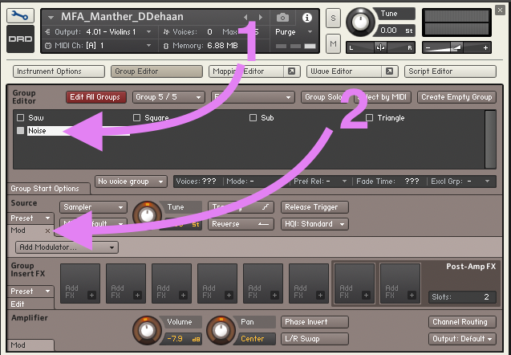
Click the “Add Modulator…” dropdown. Then selected External Sources > Random Unipolar.
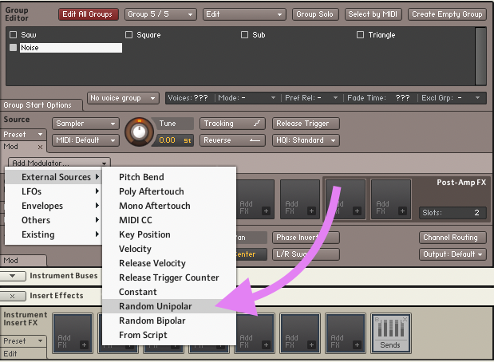
Next, set the Random Unipolar modulation source to modulate the Sample Start.
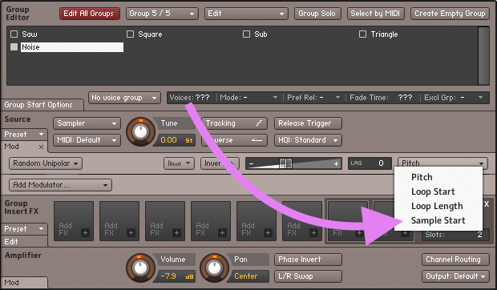
Note
Note
Hint:
Save the “Patch Only” for your instrument and add a version number to the file name. This way, if you make a major mistake in the future you can alway jump back to a previous version of the instrument.
Adding a filter
Let’s add a low pass filter to all the groups of our instrument. Because we want to be able to modulate the filter’s cutoff polyphonically with each note that we play, we’ll have to insert this filter on each group within one of the Group Insert Effects slots. All the other effect slot location within Kontakt will process all currently held note together rather than individually. In other words, effects in the “Group Insert FX” are polyphonic, effects anywhere else in our instrument are monophonic.
With “Edit All Groups” enabled, insert a low pass filter of your choosing in the first Group Insert FX slot for all the groups.
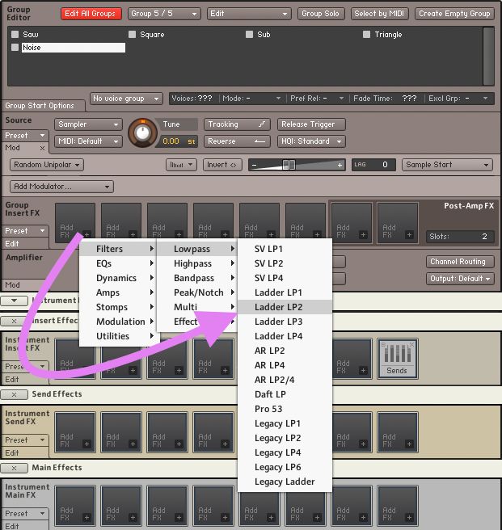
Note
Now let’s create some sliders to control the filter’s cutoff and resonance by return to Sublime text and declaring two new ui_slider in our on init callback.
{Custom slider for controlling the lowpass filter}declare ui_slider $Filter_Cutoff (0,1000000)declare ui_slider $Filter_Res (0,1000000)
Then let’s make sure that these new sliders are all stored and recalled with saved instruments and snapshots, as well as that use the same custom image as all the other sliders.
Finally, let’s create two new on ui_control() callbacks to set the filter’s cutoff frequency and resonance whenever their corresponding sliders are manipulated.
on ui_control ($Filter_Cutoff) $count := 0 while ($count < $NUM_GROUPS) set_engine_par($ENGINE_PAR_CUTOFF, $Filter_Cutoff, $count, 0, -1) inc($count) end whileend onon ui_control ($Filter_Res) $count := 0 while ($count < $NUM_GROUPS) set_engine_par($ENGINE_PAR_RESONANCE, $Filter_Res, $count, 0, -1) inc($count) end whileend on
Note
View script:
{----------------------------------------------------------------}{--------------------When the instrument loads-------------------}{----------------------------------------------------------------}on init {Create a Performance View for this Script} make_perfview {Sets the tab title for this script's performance view} {This is useful if you have multiple scripts with performance views} set_script_title("Main") {Sets the Instrument's Wallpaper picture} set_control_par_str($INST_WALLPAPER_ID,$CONTROL_PAR_PICTURE,"DRD_Manther_Main_Background") {Sets the Instrument's Icon picture} set_control_par_str($INST_ICON_ID,$CONTROL_PAR_PICTURE,"DRD Instrument Icon") {Set the height and width of the performance view in pixels} set_ui_height_px(205) set_ui_width_px(633) declare $count {Custom sliders for controlling each Group's volume} declare ui_slider $Saw_Volume (0,1000000) declare ui_slider $Square_Volume (0,1000000) declare ui_slider $Triangle_Volume (0,1000000) declare ui_slider $Sub_Volume (0,1000000) declare ui_slider $Noise_Volume (0,1000000) {Custom sliders for controlling each Group's ADSR Envelop} declare ui_slider $Env_Attack (0, 1000000) declare ui_slider $Env_Decay (0, 1000000) declare ui_slider $Env_Sustain (0, 1000000) declare ui_slider $Env_Release (0, 1000000) {Custom slider for controlling the lowpass filter} declare ui_slider $Filter_Cutoff (0,1000000) declare ui_slider $Filter_Res (0,1000000) {Enables Kontakt to store the value of this slider when saving the instrument or a snapshot} make_persistent($Saw_Volume) {Enables Kontakt to recall the value of this slider when loading the instrument or a snapshot} read_persistent_var($Saw_Volume) {Stores the ID number of the slider in a variable so it is easier to reference elsewhere within this script} declare $Saw_Volume_ID := get_ui_id($Saw_Volume) set_control_par_str($Saw_Volume_ID, $CONTROL_PAR_PICTURE, "Slider_Vertical") make_persistent($Square_Volume) read_persistent_var($Square_Volume) declare $Square_Volume_ID := get_ui_id($Square_Volume) set_control_par_str($Square_Volume_ID, $CONTROL_PAR_PICTURE, "Slider_Vertical") make_persistent($Triangle_Volume) read_persistent_var($Triangle_Volume) declare $Triangle_Volume_ID := get_ui_id($Triangle_Volume) set_control_par_str($Triangle_Volume_ID, $CONTROL_PAR_PICTURE, "Slider_Vertical") make_persistent($Sub_Volume) read_persistent_var($Sub_Volume) declare $Sub_Volume_ID := get_ui_id($Sub_Volume) set_control_par_str($Sub_Volume_ID, $CONTROL_PAR_PICTURE, "Slider_Vertical") make_persistent($Noise_Volume) read_persistent_var($Noise_Volume) declare $Noise_Volume_ID := get_ui_id($Noise_Volume) set_control_par_str($Noise_Volume_ID, $CONTROL_PAR_PICTURE, "Slider_Vertical") make_persistent($Env_Attack) read_persistent_var($Env_Attack) declare $Env_Attack_ID := get_ui_id($Env_Attack) set_control_par_str($Env_Attack_ID, $CONTROL_PAR_PICTURE, "Slider_Vertical") make_persistent($Env_Decay) read_persistent_var($Env_Decay) declare $Env_Decay_ID := get_ui_id($Env_Decay) set_control_par_str($Env_Decay_ID, $CONTROL_PAR_PICTURE, "Slider_Vertical") make_persistent($Env_Sustain) read_persistent_var($Env_Sustain) declare $Env_Sustain_ID := get_ui_id($Env_Sustain) set_control_par_str($Env_Sustain_ID, $CONTROL_PAR_PICTURE, "Slider_Vertical") make_persistent($Env_Release) read_persistent_var($Env_Release) declare $Env_Release_ID := get_ui_id($Env_Release) set_control_par_str($Env_Release_ID, $CONTROL_PAR_PICTURE, "Slider_Vertical") make_persistent($Filter_Cutoff) read_persistent_var($Filter_Cutoff) declare $Filter_Cutoff_ID := get_ui_id($Filter_Cutoff) set_control_par_str($Filter_Cutoff_ID, $CONTROL_PAR_PICTURE, "Slider_Vertical") make_persistent($Filter_Res) read_persistent_var($Filter_Res) declare $Filter_Res_ID := get_ui_id($Filter_Res) set_control_par_str($Filter_Res_ID, $CONTROL_PAR_PICTURE, "Slider_Vertical") set_control_par($Saw_Volume_ID, $CONTROL_PAR_MOUSE_BEHAVIOUR,-2000) set_control_par($Square_Volume_ID, $CONTROL_PAR_MOUSE_BEHAVIOUR,-2000) set_control_par($Triangle_Volume_ID, $CONTROL_PAR_MOUSE_BEHAVIOUR,-2000) set_control_par($Sub_Volume_ID, $CONTROL_PAR_MOUSE_BEHAVIOUR,-2000) set_control_par($Noise_Volume_ID, $CONTROL_PAR_MOUSE_BEHAVIOUR,-2000) set_control_par($Env_Attack_ID, $CONTROL_PAR_MOUSE_BEHAVIOUR,-2000) set_control_par($Env_Decay_ID, $CONTROL_PAR_MOUSE_BEHAVIOUR,-2000) set_control_par($Env_Sustain_ID, $CONTROL_PAR_MOUSE_BEHAVIOUR,-2000) set_control_par($Env_Release_ID, $CONTROL_PAR_MOUSE_BEHAVIOUR,-2000) set_control_par($Filter_Cutoff_ID, $CONTROL_PAR_MOUSE_BEHAVIOUR,-2000) set_control_par($Filter_Res_ID, $CONTROL_PAR_MOUSE_BEHAVIOUR,-2000) {Set the location of the UI controls} move_control_px($Saw_Volume, 179, 30) move_control_px($Square_Volume, 143, 30) move_control_px($Triangle_Volume, 215, 30) move_control_px($Sub_Volume, 280, 30) move_control_px($Noise_Volume, 247, 30) move_control_px($Env_Attack, 487, 30) move_control_px($Env_Decay, 520, 30) move_control_px($Env_Sustain, 553, 30) move_control_px($Env_Release, 587, 30) move_control_px($Filter_Cutoff, 317, 30) move_control_px($Filter_Res, 350, 30)end on{----------------------------------------------------------------}{------------------When a Slider is Manipulated------------------}{----------------------------------------------------------------}{Set the Saw Group's Volume when the corrisponding slider is manipulated}on ui_control ($Saw_Volume) set_engine_par($ENGINE_PAR_VOLUME, $Saw_Volume, find_group("Saw"), 0, -1)end on{Set the Square Group's Volume when the corrisponding slider is manipulated}on ui_control ($Square_Volume) set_engine_par($ENGINE_PAR_VOLUME, $Square_Volume, find_group("Square"), 0, -1)end on{Set the Triangle Group's Volume when the corrisponding slider is manipulated}on ui_control ($Triangle_Volume) set_engine_par($ENGINE_PAR_VOLUME, $Triangle_Volume, find_group("Triangle"), 0, -1)end on{Set the Sub Group's Volume when the corrisponding slider is manipulated}on ui_control ($Sub_Volume) set_engine_par($ENGINE_PAR_VOLUME, $Sub_Volume, find_group("Sub"), 0, -1)end on{Set the Noise Group's Volume when the corrisponding slider is manipulated}on ui_control ($Noise_Volume) set_engine_par($ENGINE_PAR_VOLUME, $Noise_Volume, find_group("Noise"), 0, -1)end onon ui_control ($Env_Attack) $count := 0 while ($count < $NUM_GROUPS) set_engine_par($ENGINE_PAR_ATTACK, $Env_Attack, $count, find_mod($count,"AHDSR_VOLUME"), -1) inc($count) end whileend onon ui_control ($Env_Decay) $count := 0 while ($count < $NUM_GROUPS) set_engine_par($ENGINE_PAR_DECAY, $Env_Decay, $count, find_mod($count,"AHDSR_VOLUME"), -1) inc($count) end whileend onon ui_control ($Env_Sustain) $count := 0 while ($count < $NUM_GROUPS) set_engine_par($ENGINE_PAR_SUSTAIN, $Env_Sustain, $count, find_mod($count,"AHDSR_VOLUME"), -1) inc($count) end whileend onon ui_control ($Env_Release) $count := 0 while ($count < $NUM_GROUPS) set_engine_par($ENGINE_PAR_RELEASE, $Env_Release, $count, find_mod($count,"AHDSR_VOLUME"), -1) inc($count) end whileend onon ui_control ($Filter_Cutoff) $count := 0 while ($count < $NUM_GROUPS) set_engine_par($ENGINE_PAR_CUTOFF, $Filter_Cutoff, $count, 0, -1) inc($count) end whileend onon ui_control ($Filter_Res) $count := 0 while ($count < $NUM_GROUPS) set_engine_par($ENGINE_PAR_RESONANCE, $Filter_Res, $count, 0, -1) inc($count) end whileend on
And here is what your Performance View should look like now:
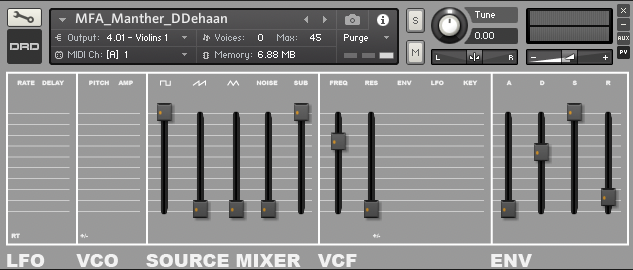
Note
Hint:
Save the “Patch Only” for your instrument and add a version number to the file name. This way, if you make a major mistake in the future you can alway jump back to a previous version of the instrument.
Adding More Modulation
Note
Make sure that “Edit All Groups” is enabled, and navigate to the modulation section of the lowpass filter we just added.
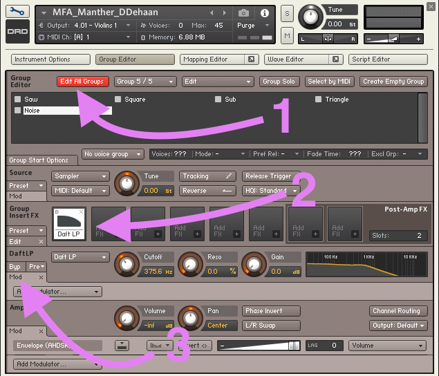
From the “Add Modulator…” dropdown menu select Existing > Envelope [→ Volume]. This will add the existing AHDSR envelope generator (that we are already using to modulate each group’s volume) as a modulation source to the filter’s cutoff frequency.
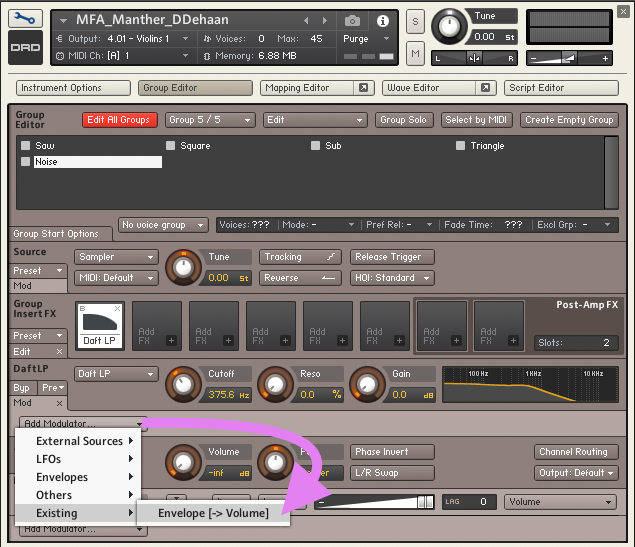
Using the “Add Modulator…” dropdown menu again, add an “LFO (Sine)” and a “Key Position” as two additional modulation sources to the filter’s cutoff frequency. Lowpass Filter’s modulation section should now look like this:
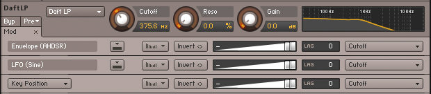
Now let’s add three new ui_sliders to our performance view that will allow us to control the amount that each of these three modulators manipulate the filter’s cutoff frequency. So just like before let’s start with setting up our new sliders in the on init callback section of our script.
{declare the ui sliders}declare ui_slider $Filter_Env (0,1000000)declare ui_slider $Filter_LFO (0,1000000)declare ui_slider $Filter_Key (0,1000000){save and recall values for each slider when the instrument or snapshot is saved/recalled}make_persistent($Filter_Env)make_persistent($Filter_LFO)make_persistent($Filter_Key)read_persistent_var($Filter_Env)read_persistent_var($Filter_LFO)read_persistent_var($Filter_Key){create a variable for storing the ID number of each slider for use within this script}declare $Filter_Env_ID := get_ui_id($Filter_Env)declare $Filter_LFO_ID := get_ui_id($Filter_LFO)declare $Filter_Key_ID := get_ui_id($Filter_Key){assign a custom graphic to each slider}set_control_par_str($Filter_Env_ID, $CONTROL_PAR_PICTURE, "Slider_Vertical")set_control_par_str($Filter_LFO_ID, $CONTROL_PAR_PICTURE, "Slider_Vertical")set_control_par_str($Filter_Key_ID, $CONTROL_PAR_PICTURE, "Slider_Vertical"){set the mouse behavior for each slider}set_control_par($Filter_Env_ID, $CONTROL_PAR_MOUSE_BEHAVIOUR,-2000)set_control_par($Filter_LFO_ID, $CONTROL_PAR_MOUSE_BEHAVIOUR,-2000)set_control_par($Filter_Key_ID, $CONTROL_PAR_MOUSE_BEHAVIOUR,-2000){position each of the sliders}move_control_px($Filter_Env, 382, 30)move_control_px($Filter_LFO, 416, 30)move_control_px($Filter_Key, 448, 30)
Finally, let’s add three new on ui_control() callbacks to specify what happens whenever the user manipulates the sliders.
on ui_control ($Filter_Env) $count := 0 while ($count < $NUM_GROUPS) set_engine_par($ENGINE_PAR_MOD_TARGET_INTENSITY, $Filter_Env, $count, 0, 1) inc($count) end whileend onon ui_control ($Filter_LFO) $count := 0 while ($count < $NUM_GROUPS) set_engine_par($ENGINE_PAR_MOD_TARGET_INTENSITY, $Filter_LFO, $count, 1, 0) inc($count) end whileend onon ui_control ($Filter_Key) $count := 0 while ($count < $NUM_GROUPS) set_engine_par($ENGINE_PAR_MOD_TARGET_INTENSITY, $Filter_Key, $count, find_mod($count, "KP_CUTOFF"), -1) inc($count) end whileend on
Note
View Script:
{----------------------------------------------------------------}{--------------------When the instrument loads-------------------}{----------------------------------------------------------------}on init {Create a Performance View for this Script} make_perfview {Sets the tab title for this script's performance view} {This is useful if you have multiple scripts with performance views} set_script_title("Main") {Sets the Instrument's Wallpaper picture} set_control_par_str($INST_WALLPAPER_ID,$CONTROL_PAR_PICTURE,"DRD_Manther_Main_Background") {Sets the Instrument's Icon picture} set_control_par_str($INST_ICON_ID,$CONTROL_PAR_PICTURE,"DRD Instrument Icon") {Set the height and width of the performance view in pixels} set_ui_height_px(205) set_ui_width_px(633) declare $count {Custom sliders for controlling each Group's volume} declare ui_slider $Saw_Volume (0,1000000) declare ui_slider $Square_Volume (0,1000000) declare ui_slider $Triangle_Volume (0,1000000) declare ui_slider $Sub_Volume (0,1000000) declare ui_slider $Noise_Volume (0,1000000) {Custom sliders for controlling each Group's ADSR Envelop} declare ui_slider $Env_Attack (0, 1000000) declare ui_slider $Env_Decay (0, 1000000) declare ui_slider $Env_Sustain (0, 1000000) declare ui_slider $Env_Release (0, 1000000) {Custom slider for controlling the lowpass filter} declare ui_slider $Filter_Cutoff (0,1000000) declare ui_slider $Filter_Res (0,1000000) declare ui_slider $Filter_Env (0,1000000) declare ui_slider $Filter_LFO (0,1000000) declare ui_slider $Filter_Key (0,1000000) {Enables Kontakt to store the value of this slider when saving the instrument or a snapshot} make_persistent($Saw_Volume) {Enables Kontakt to recall the value of this slider when loading the instrument or a snapshot} read_persistent_var($Saw_Volume) {Stores the ID number of the slider in a variable so it is easier to reference elsewhere within this script} declare $Saw_Volume_ID := get_ui_id($Saw_Volume) set_control_par_str($Saw_Volume_ID, $CONTROL_PAR_PICTURE, "Slider_Vertical") make_persistent($Square_Volume) read_persistent_var($Square_Volume) declare $Square_Volume_ID := get_ui_id($Square_Volume) set_control_par_str($Square_Volume_ID, $CONTROL_PAR_PICTURE, "Slider_Vertical") make_persistent($Triangle_Volume) read_persistent_var($Triangle_Volume) declare $Triangle_Volume_ID := get_ui_id($Triangle_Volume) set_control_par_str($Triangle_Volume_ID, $CONTROL_PAR_PICTURE, "Slider_Vertical") make_persistent($Sub_Volume) read_persistent_var($Sub_Volume) declare $Sub_Volume_ID := get_ui_id($Sub_Volume) set_control_par_str($Sub_Volume_ID, $CONTROL_PAR_PICTURE, "Slider_Vertical") make_persistent($Noise_Volume) read_persistent_var($Noise_Volume) declare $Noise_Volume_ID := get_ui_id($Noise_Volume) set_control_par_str($Noise_Volume_ID, $CONTROL_PAR_PICTURE, "Slider_Vertical") make_persistent($Env_Attack) read_persistent_var($Env_Attack) declare $Env_Attack_ID := get_ui_id($Env_Attack) set_control_par_str($Env_Attack_ID, $CONTROL_PAR_PICTURE, "Slider_Vertical") make_persistent($Env_Decay) read_persistent_var($Env_Decay) declare $Env_Decay_ID := get_ui_id($Env_Decay) set_control_par_str($Env_Decay_ID, $CONTROL_PAR_PICTURE, "Slider_Vertical") make_persistent($Env_Sustain) read_persistent_var($Env_Sustain) declare $Env_Sustain_ID := get_ui_id($Env_Sustain) set_control_par_str($Env_Sustain_ID, $CONTROL_PAR_PICTURE, "Slider_Vertical") make_persistent($Env_Release) read_persistent_var($Env_Release) declare $Env_Release_ID := get_ui_id($Env_Release) set_control_par_str($Env_Release_ID, $CONTROL_PAR_PICTURE, "Slider_Vertical") make_persistent($Filter_Cutoff) read_persistent_var($Filter_Cutoff) declare $Filter_Cutoff_ID := get_ui_id($Filter_Cutoff) set_control_par_str($Filter_Cutoff_ID, $CONTROL_PAR_PICTURE, "Slider_Vertical") make_persistent($Filter_Res) read_persistent_var($Filter_Res) declare $Filter_Res_ID := get_ui_id($Filter_Res) set_control_par_str($Filter_Res_ID, $CONTROL_PAR_PICTURE, "Slider_Vertical") make_persistent($Filter_Env) read_persistent_var($Filter_Env) declare $Filter_Env_ID := get_ui_id($Filter_Env) set_control_par_str($Filter_Env_ID, $CONTROL_PAR_PICTURE, "Slider_Vertical") make_persistent($Filter_LFO) read_persistent_var($Filter_LFO) declare $Filter_LFO_ID := get_ui_id($Filter_LFO) set_control_par_str($Filter_LFO_ID, $CONTROL_PAR_PICTURE, "Slider_Vertical") make_persistent($Filter_Key) read_persistent_var($Filter_Key) declare $Filter_Key_ID := get_ui_id($Filter_Key) set_control_par_str($Filter_Key_ID, $CONTROL_PAR_PICTURE, "Slider_Vertical") set_control_par($Saw_Volume_ID, $CONTROL_PAR_MOUSE_BEHAVIOUR,-2000) set_control_par($Square_Volume_ID, $CONTROL_PAR_MOUSE_BEHAVIOUR,-2000) set_control_par($Triangle_Volume_ID, $CONTROL_PAR_MOUSE_BEHAVIOUR,-2000) set_control_par($Sub_Volume_ID, $CONTROL_PAR_MOUSE_BEHAVIOUR,-2000) set_control_par($Noise_Volume_ID, $CONTROL_PAR_MOUSE_BEHAVIOUR,-2000) set_control_par($Env_Attack_ID, $CONTROL_PAR_MOUSE_BEHAVIOUR,-2000) set_control_par($Env_Decay_ID, $CONTROL_PAR_MOUSE_BEHAVIOUR,-2000) set_control_par($Env_Sustain_ID, $CONTROL_PAR_MOUSE_BEHAVIOUR,-2000) set_control_par($Env_Release_ID, $CONTROL_PAR_MOUSE_BEHAVIOUR,-2000) set_control_par($Filter_Cutoff_ID, $CONTROL_PAR_MOUSE_BEHAVIOUR,-2000) set_control_par($Filter_Res_ID, $CONTROL_PAR_MOUSE_BEHAVIOUR,-2000) set_control_par($Filter_Env_ID, $CONTROL_PAR_MOUSE_BEHAVIOUR,-2000) set_control_par($Filter_LFO_ID, $CONTROL_PAR_MOUSE_BEHAVIOUR,-2000) set_control_par($Filter_Key_ID, $CONTROL_PAR_MOUSE_BEHAVIOUR,-2000) {Set the location of the UI controls} move_control_px($Saw_Volume, 179, 30) move_control_px($Square_Volume, 143, 30) move_control_px($Triangle_Volume, 215, 30) move_control_px($Sub_Volume, 280, 30) move_control_px($Noise_Volume, 247, 30) move_control_px($Env_Attack, 487, 30) move_control_px($Env_Decay, 520, 30) move_control_px($Env_Sustain, 553, 30) move_control_px($Env_Release, 587, 30) move_control_px($Filter_Cutoff, 317, 30) move_control_px($Filter_Res, 350, 30) move_control_px($Filter_Env, 382, 30) move_control_px($Filter_LFO, 416, 30) move_control_px($Filter_Key, 448, 30)end on{----------------------------------------------------------------}{------------------When a Slider is Manipulated------------------}{----------------------------------------------------------------}{Set the Saw Group's Volume when the corrisponding slider is manipulated}on ui_control ($Saw_Volume) set_engine_par($ENGINE_PAR_VOLUME, $Saw_Volume, find_group("Saw"), 0, -1)end on{Set the Square Group's Volume when the corrisponding slider is manipulated}on ui_control ($Square_Volume) set_engine_par($ENGINE_PAR_VOLUME, $Square_Volume, find_group("Square"), 0, -1)end on{Set the Triangle Group's Volume when the corrisponding slider is manipulated}on ui_control ($Triangle_Volume) set_engine_par($ENGINE_PAR_VOLUME, $Triangle_Volume, find_group("Triangle"), 0, -1)end on{Set the Sub Group's Volume when the corrisponding slider is manipulated}on ui_control ($Sub_Volume) set_engine_par($ENGINE_PAR_VOLUME, $Sub_Volume, find_group("Sub"), 0, -1)end on{Set the Noise Group's Volume when the corrisponding slider is manipulated}on ui_control ($Noise_Volume) set_engine_par($ENGINE_PAR_VOLUME, $Noise_Volume, find_group("Noise"), 0, -1)end onon ui_control ($Env_Attack) $count := 0 while ($count < $NUM_GROUPS) set_engine_par($ENGINE_PAR_ATTACK, $Env_Attack, $count, find_mod($count,"AHDSR_VOLUME"), -1) inc($count) end whileend onon ui_control ($Env_Decay) $count := 0 while ($count < $NUM_GROUPS) set_engine_par($ENGINE_PAR_DECAY, $Env_Decay, $count, find_mod($count,"AHDSR_VOLUME"), -1) inc($count) end whileend onon ui_control ($Env_Sustain) $count := 0 while ($count < $NUM_GROUPS) set_engine_par($ENGINE_PAR_SUSTAIN, $Env_Sustain, $count, find_mod($count,"AHDSR_VOLUME"), -1) inc($count) end whileend onon ui_control ($Env_Release) $count := 0 while ($count < $NUM_GROUPS) set_engine_par($ENGINE_PAR_RELEASE, $Env_Release, $count, find_mod($count,"AHDSR_VOLUME"), -1) inc($count) end whileend onon ui_control ($Filter_Cutoff) $count := 0 while ($count < $NUM_GROUPS) set_engine_par($ENGINE_PAR_CUTOFF, $Filter_Cutoff, $count, 0, -1) inc($count) end whileend onon ui_control ($Filter_Res) $count := 0 while ($count < $NUM_GROUPS) set_engine_par($ENGINE_PAR_RESONANCE, $Filter_Res, $count, 0, -1) inc($count) end whileend onon ui_control ($Filter_Env) $count := 0 while ($count < $NUM_GROUPS) set_engine_par($ENGINE_PAR_MOD_TARGET_INTENSITY, $Filter_Env, $count, 0, 1) inc($count) end whileend onon ui_control ($Filter_LFO) $count := 0 while ($count < $NUM_GROUPS) set_engine_par($ENGINE_PAR_MOD_TARGET_INTENSITY, $Filter_LFO, $count, 1, 0) inc($count) end whileend onon ui_control ($Filter_Key) $count := 0 while ($count < $NUM_GROUPS) set_engine_par($ENGINE_PAR_MOD_TARGET_INTENSITY, $Filter_Key, $count, find_mod($count, "KP_CUTOFF"), -1) inc($count) end whileend on
And here is what your instrument’s Performance View should look like now:
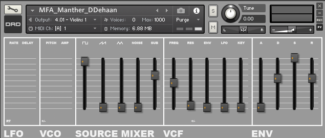
Note
Making sure that “Edit all Groups” is still enabled, right click on the “Tune” knob in the Source Panel and add the existing LFO as a modulation source.
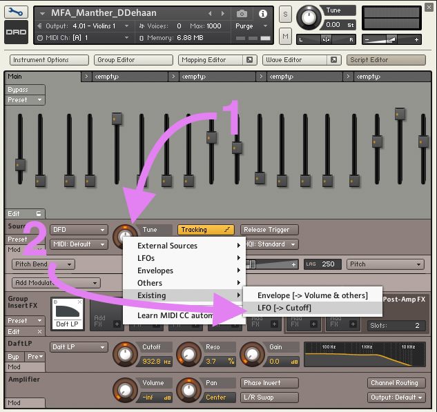
Repeat the same process to add the LFO as a modulation source to the “Volume” knob within the group’s “Amplifier” panel.
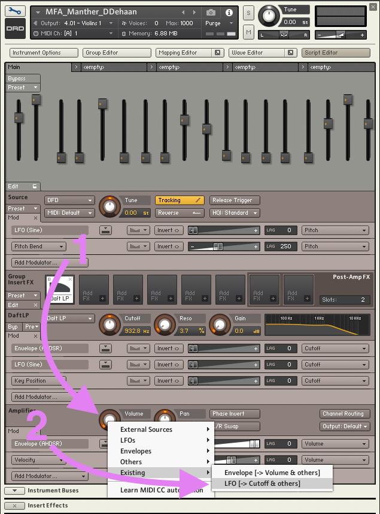
Note
$LFO_Rate = The rate of the LFO
$LFO_Delay = The time it takes for the slider to reach it maximum effect after the start of each note
$Pitch_LFO = How much does the LFO modulate the pitch of the sample(s) being played
$Amp_LFO = How much does the LFO modulate the amplitude of the sample(s) being played
Declare the four new ui_sliders within the script’s on_init callback.
{Custom sliders for controlling the LFO}declare ui_slider $LFO_Rate (0,1000000)declare ui_slider $LFO_Delay (0,1000000)declare ui_slider $Pitch_LFO (0,1000000)declare ui_slider $Amp_LFO (0,1000000)
As always, make sure that they are identified as persistent variables that will be stored/recalled when the instrument or a snapshot is saved/loaded, and that each has the custom picture assigned to it.
Finally, we’ll add four more on ui_control() callbacks to specific what happens when each of the new sliders are manipulated by the user.
on ui_control ($LFO_Rate) $count := 0 while ($count < $NUM_GROUPS) set_engine_par($ENGINE_PAR_INTMOD_FREQUENCY, $LFO_Rate, $count, 1, -1) inc($count) end whileend onon ui_control ($LFO_Delay) $count := 0 while ($count < $NUM_GROUPS) set_engine_par($ENGINE_PAR_LFO_DELAY, $LFO_Delay, $count, 1, -1) inc($count) end whileend onon ui_control ($Pitch_LFO) $count := 0 while ($count < $NUM_GROUPS) set_engine_par($ENGINE_PAR_MOD_TARGET_INTENSITY, $Pitch_LFO, $count, 1, 1) inc($count) end whileend onon ui_control ($Amp_LFO) $count := 0 while ($count < $NUM_GROUPS) set_engine_par($ENGINE_PAR_MOD_TARGET_INTENSITY, $Amp_LFO, $count, 1, 2) inc($count) end whileend on
Note
View Script
{----------------------------------------------------------------}{--------------------When the instrument loads-------------------}{----------------------------------------------------------------}on init {Create a Performance View for this Script} make_perfview {Sets the tab title for this script's performance view} {This is useful if you have multiple scripts with performance views} set_script_title("Main") {Sets the Instrument's Wallpaper picture} set_control_par_str($INST_WALLPAPER_ID,$CONTROL_PAR_PICTURE,"DRD_Manther_Main_Background") {Sets the Instrument's Icon picture} set_control_par_str($INST_ICON_ID,$CONTROL_PAR_PICTURE,"DRD Instrument Icon") {Set the height and width of the performance view in pixels} set_ui_height_px(205) set_ui_width_px(633) declare $count {Custom sliders for controlling each Group's volume} declare ui_slider $Saw_Volume (0,1000000) declare ui_slider $Square_Volume (0,1000000) declare ui_slider $Triangle_Volume (0,1000000) declare ui_slider $Sub_Volume (0,1000000) declare ui_slider $Noise_Volume (0,1000000) {Custom sliders for controlling each Group's ADSR Envelop} declare ui_slider $Env_Attack (0, 1000000) declare ui_slider $Env_Decay (0, 1000000) declare ui_slider $Env_Sustain (0, 1000000) declare ui_slider $Env_Release (0, 1000000) {Custom sliders for controlling the lowpass filter} declare ui_slider $Filter_Cutoff (0,1000000) declare ui_slider $Filter_Res (0,1000000) declare ui_slider $Filter_Env (0,1000000) declare ui_slider $Filter_LFO (0,1000000) declare ui_slider $Filter_Key (0,1000000) {Custom sliders for controlling the LFO} declare ui_slider $LFO_Rate (0,1000000) declare ui_slider $LFO_Delay (0,1000000) declare ui_slider $Pitch_LFO (0,1000000) declare ui_slider $Amp_LFO (0,1000000) {Enables Kontakt to store the value of this slider when saving the instrument or a snapshot} make_persistent($Saw_Volume) {Enables Kontakt to recall the value of this slider when loading the instrument or a snapshot} read_persistent_var($Saw_Volume) {Stores the ID number of the slider in a variable so it is easier to reference elsewhere within this script} declare $Saw_Volume_ID := get_ui_id($Saw_Volume) set_control_par_str($Saw_Volume_ID, $CONTROL_PAR_PICTURE, "Slider_Vertical") make_persistent($Square_Volume) read_persistent_var($Square_Volume) declare $Square_Volume_ID := get_ui_id($Square_Volume) set_control_par_str($Square_Volume_ID, $CONTROL_PAR_PICTURE, "Slider_Vertical") make_persistent($Triangle_Volume) read_persistent_var($Triangle_Volume) declare $Triangle_Volume_ID := get_ui_id($Triangle_Volume) set_control_par_str($Triangle_Volume_ID, $CONTROL_PAR_PICTURE, "Slider_Vertical") make_persistent($Sub_Volume) read_persistent_var($Sub_Volume) declare $Sub_Volume_ID := get_ui_id($Sub_Volume) set_control_par_str($Sub_Volume_ID, $CONTROL_PAR_PICTURE, "Slider_Vertical") make_persistent($Noise_Volume) read_persistent_var($Noise_Volume) declare $Noise_Volume_ID := get_ui_id($Noise_Volume) set_control_par_str($Noise_Volume_ID, $CONTROL_PAR_PICTURE, "Slider_Vertical") make_persistent($Env_Attack) read_persistent_var($Env_Attack) declare $Env_Attack_ID := get_ui_id($Env_Attack) set_control_par_str($Env_Attack_ID, $CONTROL_PAR_PICTURE, "Slider_Vertical") make_persistent($Env_Decay) read_persistent_var($Env_Decay) declare $Env_Decay_ID := get_ui_id($Env_Decay) set_control_par_str($Env_Decay_ID, $CONTROL_PAR_PICTURE, "Slider_Vertical") make_persistent($Env_Sustain) read_persistent_var($Env_Sustain) declare $Env_Sustain_ID := get_ui_id($Env_Sustain) set_control_par_str($Env_Sustain_ID, $CONTROL_PAR_PICTURE, "Slider_Vertical") make_persistent($Env_Release) read_persistent_var($Env_Release) declare $Env_Release_ID := get_ui_id($Env_Release) set_control_par_str($Env_Release_ID, $CONTROL_PAR_PICTURE, "Slider_Vertical") make_persistent($Filter_Cutoff) read_persistent_var($Filter_Cutoff) declare $Filter_Cutoff_ID := get_ui_id($Filter_Cutoff) set_control_par_str($Filter_Cutoff_ID, $CONTROL_PAR_PICTURE, "Slider_Vertical") make_persistent($Filter_Res) read_persistent_var($Filter_Res) declare $Filter_Res_ID := get_ui_id($Filter_Res) set_control_par_str($Filter_Res_ID, $CONTROL_PAR_PICTURE, "Slider_Vertical") make_persistent($Filter_Env) read_persistent_var($Filter_Env) declare $Filter_Env_ID := get_ui_id($Filter_Env) set_control_par_str($Filter_Env_ID, $CONTROL_PAR_PICTURE, "Slider_Vertical") make_persistent($Filter_LFO) read_persistent_var($Filter_LFO) declare $Filter_LFO_ID := get_ui_id($Filter_LFO) set_control_par_str($Filter_LFO_ID, $CONTROL_PAR_PICTURE, "Slider_Vertical") make_persistent($Filter_Key) read_persistent_var($Filter_Key) declare $Filter_Key_ID := get_ui_id($Filter_Key) set_control_par_str($Filter_Key_ID, $CONTROL_PAR_PICTURE, "Slider_Vertical") make_persistent($LFO_Rate) read_persistent_var($LFO_Rate) declare $LFO_Rate_ID := get_ui_id($LFO_Rate) set_control_par_str($LFO_Rate_ID, $CONTROL_PAR_PICTURE, "Slider_Vertical") make_persistent($LFO_Delay) read_persistent_var($LFO_Delay) declare $LFO_Delay_ID := get_ui_id($LFO_Delay) set_control_par_str($LFO_Delay_ID, $CONTROL_PAR_PICTURE, "Slider_Vertical") make_persistent($Pitch_LFO) read_persistent_var($Pitch_LFO) declare $Pitch_LFO_ID := get_ui_id($Pitch_LFO) set_control_par_str($Pitch_LFO_ID, $CONTROL_PAR_PICTURE, "Slider_Vertical") make_persistent($Amp_LFO) read_persistent_var($Amp_LFO) declare $Amp_LFO_ID := get_ui_id($Amp_LFO) set_control_par_str($Amp_LFO_ID, $CONTROL_PAR_PICTURE, "Slider_Vertical") set_control_par($Saw_Volume_ID, $CONTROL_PAR_MOUSE_BEHAVIOUR,-2000) set_control_par($Square_Volume_ID, $CONTROL_PAR_MOUSE_BEHAVIOUR,-2000) set_control_par($Triangle_Volume_ID, $CONTROL_PAR_MOUSE_BEHAVIOUR,-2000) set_control_par($Sub_Volume_ID, $CONTROL_PAR_MOUSE_BEHAVIOUR,-2000) set_control_par($Noise_Volume_ID, $CONTROL_PAR_MOUSE_BEHAVIOUR,-2000) set_control_par($Env_Attack_ID, $CONTROL_PAR_MOUSE_BEHAVIOUR,-2000) set_control_par($Env_Decay_ID, $CONTROL_PAR_MOUSE_BEHAVIOUR,-2000) set_control_par($Env_Sustain_ID, $CONTROL_PAR_MOUSE_BEHAVIOUR,-2000) set_control_par($Env_Release_ID, $CONTROL_PAR_MOUSE_BEHAVIOUR,-2000) set_control_par($Filter_Cutoff_ID, $CONTROL_PAR_MOUSE_BEHAVIOUR,-2000) set_control_par($Filter_Res_ID, $CONTROL_PAR_MOUSE_BEHAVIOUR,-2000) set_control_par($Filter_Env_ID, $CONTROL_PAR_MOUSE_BEHAVIOUR,-2000) set_control_par($Filter_LFO_ID, $CONTROL_PAR_MOUSE_BEHAVIOUR,-2000) set_control_par($Filter_Key_ID, $CONTROL_PAR_MOUSE_BEHAVIOUR,-2000) set_control_par($LFO_Rate_ID, $CONTROL_PAR_MOUSE_BEHAVIOUR,-2000) set_control_par($LFO_Delay_ID, $CONTROL_PAR_MOUSE_BEHAVIOUR,-2000) set_control_par($Pitch_LFO_ID, $CONTROL_PAR_MOUSE_BEHAVIOUR,-2000) set_control_par($Amp_LFO_ID, $CONTROL_PAR_MOUSE_BEHAVIOUR,-2000) {Set the location of the UI controls} move_control_px($Saw_Volume, 179, 30) move_control_px($Square_Volume, 143, 30) move_control_px($Triangle_Volume, 215, 30) move_control_px($Sub_Volume, 280, 30) move_control_px($Noise_Volume, 247, 30) move_control_px($Env_Attack, 487, 30) move_control_px($Env_Decay, 520, 30) move_control_px($Env_Sustain, 553, 30) move_control_px($Env_Release, 587, 30) move_control_px($Filter_Cutoff, 317, 30) move_control_px($Filter_Res, 350, 30) move_control_px($Filter_Env, 382, 30) move_control_px($Filter_LFO, 416, 30) move_control_px($Filter_Key, 448, 30) move_control_px($LFO_Rate, 3, 30) move_control_px($LFO_Delay, 32, 30) move_control_px($Pitch_LFO, 74, 30) move_control_px($Amp_LFO, 104, 30)end on{----------------------------------------------------------------}{------------------When a Slider is Manipulated------------------}{----------------------------------------------------------------}{Set the Saw Group's Volume when the corrisponding slider is manipulated}on ui_control ($Saw_Volume) set_engine_par($ENGINE_PAR_VOLUME, $Saw_Volume, find_group("Saw"), 0, -1)end on{Set the Square Group's Volume when the corrisponding slider is manipulated}on ui_control ($Square_Volume) set_engine_par($ENGINE_PAR_VOLUME, $Square_Volume, find_group("Square"), 0, -1)end on{Set the Triangle Group's Volume when the corrisponding slider is manipulated}on ui_control ($Triangle_Volume) set_engine_par($ENGINE_PAR_VOLUME, $Triangle_Volume, find_group("Triangle"), 0, -1)end on{Set the Sub Group's Volume when the corrisponding slider is manipulated}on ui_control ($Sub_Volume) set_engine_par($ENGINE_PAR_VOLUME, $Sub_Volume, find_group("Sub"), 0, -1)end on{Set the Noise Group's Volume when the corrisponding slider is manipulated}on ui_control ($Noise_Volume) set_engine_par($ENGINE_PAR_VOLUME, $Noise_Volume, find_group("Noise"), 0, -1)end onon ui_control ($Env_Attack) $count := 0 while ($count < $NUM_GROUPS) set_engine_par($ENGINE_PAR_ATTACK, $Env_Attack, $count, find_mod($count,"AHDSR_VOLUME"), -1) inc($count) end whileend onon ui_control ($Env_Decay) $count := 0 while ($count < $NUM_GROUPS) set_engine_par($ENGINE_PAR_DECAY, $Env_Decay, $count, find_mod($count,"AHDSR_VOLUME"), -1) inc($count) end whileend onon ui_control ($Env_Sustain) $count := 0 while ($count < $NUM_GROUPS) set_engine_par($ENGINE_PAR_SUSTAIN, $Env_Sustain, $count, find_mod($count,"AHDSR_VOLUME"), -1) inc($count) end whileend onon ui_control ($Env_Release) $count := 0 while ($count < $NUM_GROUPS) set_engine_par($ENGINE_PAR_RELEASE, $Env_Release, $count, find_mod($count,"AHDSR_VOLUME"), -1) inc($count) end whileend onon ui_control ($Filter_Cutoff) $count := 0 while ($count < $NUM_GROUPS) set_engine_par($ENGINE_PAR_CUTOFF, $Filter_Cutoff, $count, 0, -1) inc($count) end whileend onon ui_control ($Filter_Res) $count := 0 while ($count < $NUM_GROUPS) set_engine_par($ENGINE_PAR_RESONANCE, $Filter_Res, $count, 0, -1) inc($count) end whileend onon ui_control ($Filter_Env) $count := 0 while ($count < $NUM_GROUPS) set_engine_par($ENGINE_PAR_MOD_TARGET_INTENSITY, $Filter_Env, $count, 0, 1) inc($count) end whileend onon ui_control ($Filter_LFO) $count := 0 while ($count < $NUM_GROUPS) set_engine_par($ENGINE_PAR_MOD_TARGET_INTENSITY, $Filter_LFO, $count, 1, 0) inc($count) end whileend onon ui_control ($Filter_Key) $count := 0 while ($count < $NUM_GROUPS) if ($count > 3) set_engine_par($ENGINE_PAR_MOD_TARGET_INTENSITY, $Filter_Key, $count, 16, -1) else set_engine_par($ENGINE_PAR_MOD_TARGET_INTENSITY, $Filter_Key, $count, 18, -1) end if inc($count) end whileend onon ui_control ($LFO_Rate) $count := 0 while ($count < $NUM_GROUPS) set_engine_par($ENGINE_PAR_INTMOD_FREQUENCY, $LFO_Rate, $count, 1, -1) inc($count) end whileend onon ui_control ($LFO_Delay) $count := 0 while ($count < $NUM_GROUPS) set_engine_par($ENGINE_PAR_LFO_DELAY, $LFO_Delay, $count, 1, -1) inc($count) end whileend onon ui_control ($Pitch_LFO) $count := 0 while ($count < $NUM_GROUPS) set_engine_par($ENGINE_PAR_MOD_TARGET_INTENSITY, $Pitch_LFO, $count, 1, 1) inc($count) end whileend onon ui_control ($Amp_LFO) $count := 0 while ($count < $NUM_GROUPS) set_engine_par($ENGINE_PAR_MOD_TARGET_INTENSITY, $Amp_LFO, $count, 1, 2) inc($count) end whileend on
And here is what the instrument’s performance view should look like:
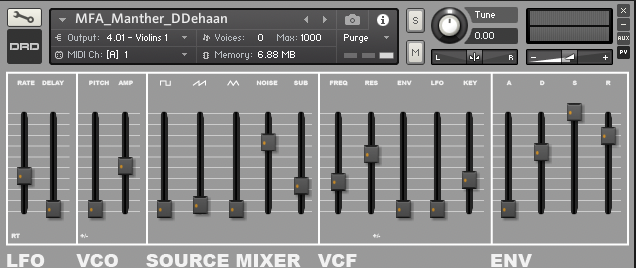
Note
Hint:
Save the “Patch Only” for your instrument and add a version number to the file name. This way, if you make a major mistake in the future you can alway jump back to a previous version of the instrument.
Adding some switches for things
Declare, customize, make persistent, and position the four new sliders.
{Custrom switches for control various things}declare ui_slider $Filter_Env_Switch (0, 10)declare ui_slider $Filter_LFO_Switch (0, 10)declare ui_slider $Filter_Key_Switch (0, 10)declare ui_slider $Pitch_LFO_Switch (0, 10)declare ui_slider $Amp_LFO_Switch (0, 10)declare ui_slider $LFO_Retrigger_Switch (0, 10)
Finally, create a new on ui_control () for each new slider to control what happens when each switch (slider) is manipulated.
on ui_control ($Filter_Env_Switch) $count := 0 while ($count < $NUM_GROUPS) if ($Filter_Env_Switch >= 5) set_engine_par($MOD_TARGET_INVERT_SOURCE, 1000000, $count, 0, 1) else set_engine_par($MOD_TARGET_INVERT_SOURCE, 0, $count, 0, 1) end if inc($count) end whileend onon ui_control ($Filter_LFO_Switch) $count := 0 while ($count < $NUM_GROUPS) if ($Filter_LFO_Switch >= 5) set_engine_par($MOD_TARGET_INVERT_SOURCE, 1000000, $count, 1, 0) else set_engine_par($MOD_TARGET_INVERT_SOURCE, 0, $count, 1, 0) end if inc($count) end whileend onon ui_control ($Filter_Key_Switch) $count := 0 while ($count < $NUM_GROUPS) if ($Filter_Key_Switch >= 5) set_engine_par($MOD_TARGET_INVERT_SOURCE, 1000000, $count, find_mod($count, "KP_CUTOFF"), -1) else set_engine_par($MOD_TARGET_INVERT_SOURCE, 0, $count, find_mod($count, "KP_CUTOFF"), -1) end if inc($count) end whileend onon ui_control ($Pitch_LFO_Switch) $count := 0 while ($count < $NUM_GROUPS) if ($Pitch_LFO_Switch >= 5) set_engine_par($MOD_TARGET_INVERT_SOURCE, 1000000, $count, 1, 1) else set_engine_par($MOD_TARGET_INVERT_SOURCE, 0, $count, 1, 1) end if inc($count) end whileend onon ui_control ($Amp_LFO_Switch) $count := 0 while ($count < $NUM_GROUPS) if ($Amp_LFO_Switch >= 5) set_engine_par($MOD_TARGET_INVERT_SOURCE, 1000000, $count, 1, 2) else set_engine_par($MOD_TARGET_INVERT_SOURCE, 0, $count, 1, 2) end if inc($count) end whileend onon ui_control ($LFO_Retrigger_Switch) $count := 0 while ($count < $NUM_GROUPS) if ($LFO_Retrigger_Switch >= 5) set_engine_par($ENGINE_PAR_INTMOD_RETRIGGER, 1000000, $count, 1, -1) else set_engine_par($ENGINE_PAR_INTMOD_RETRIGGER, 0, $count, 1, -1) end if inc($count) end whileend on
Note
View Script
{----------------------------------------------------------------}{--------------------When the instrument loads-------------------}{----------------------------------------------------------------}on init {Create a Performance View for this Script} make_perfview {Sets the tab title for this script's performance view} {This is useful if you have multiple scripts with performance views} set_script_title("Main") {Sets the Instrument's Wallpaper picture} set_control_par_str($INST_WALLPAPER_ID,$CONTROL_PAR_PICTURE,"DRD_Manther_Main_Background") {Sets the Instrument's Icon picture} set_control_par_str($INST_ICON_ID,$CONTROL_PAR_PICTURE,"DRD Instrument Icon") {Set the height and width of the performance view in pixels} set_ui_height_px(205) set_ui_width_px(633) declare $count {Custom sliders for controlling each Group's volume} declare ui_slider $Saw_Volume (0,1000000) declare ui_slider $Square_Volume (0,1000000) declare ui_slider $Triangle_Volume (0,1000000) declare ui_slider $Sub_Volume (0,1000000) declare ui_slider $Noise_Volume (0,1000000) {Custom sliders for controlling each Group's ADSR Envelop} declare ui_slider $Env_Attack (0, 1000000) declare ui_slider $Env_Decay (0, 1000000) declare ui_slider $Env_Sustain (0, 1000000) declare ui_slider $Env_Release (0, 1000000) {Custom sliders for controlling the lowpass filter} declare ui_slider $Filter_Cutoff (0,1000000) declare ui_slider $Filter_Res (0,1000000) declare ui_slider $Filter_Env (0,1000000) declare ui_slider $Filter_LFO (0,1000000) declare ui_slider $Filter_Key (0,1000000) {Custom sliders for controlling the LFO} declare ui_slider $LFO_Rate (0,1000000) declare ui_slider $LFO_Delay (0,1000000) declare ui_slider $Pitch_LFO (0,1000000) declare ui_slider $Amp_LFO (0,1000000) {Custrom switches for control various things} declare ui_slider $Filter_Env_Switch (0, 10) declare ui_slider $Filter_LFO_Switch (0, 10) declare ui_slider $Filter_Key_Switch (0, 10) declare ui_slider $Pitch_LFO_Switch (0, 10) declare ui_slider $Amp_LFO_Switch (0, 10) declare ui_slider $LFO_Retrigger_Switch (0, 10) {Enables Kontakt to store the value of this slider when saving the instrument or a snapshot} make_persistent($Saw_Volume) {Enables Kontakt to recall the value of this slider when loading the instrument or a snapshot} read_persistent_var($Saw_Volume) {Stores the ID number of the slider in a variable so it is easier to reference elsewhere within this script} declare $Saw_Volume_ID := get_ui_id($Saw_Volume) set_control_par_str($Saw_Volume_ID, $CONTROL_PAR_PICTURE, "Slider_Vertical") make_persistent($Square_Volume) read_persistent_var($Square_Volume) declare $Square_Volume_ID := get_ui_id($Square_Volume) set_control_par_str($Square_Volume_ID, $CONTROL_PAR_PICTURE, "Slider_Vertical") make_persistent($Triangle_Volume) read_persistent_var($Triangle_Volume) declare $Triangle_Volume_ID := get_ui_id($Triangle_Volume) set_control_par_str($Triangle_Volume_ID, $CONTROL_PAR_PICTURE, "Slider_Vertical") make_persistent($Sub_Volume) read_persistent_var($Sub_Volume) declare $Sub_Volume_ID := get_ui_id($Sub_Volume) set_control_par_str($Sub_Volume_ID, $CONTROL_PAR_PICTURE, "Slider_Vertical") make_persistent($Noise_Volume) read_persistent_var($Noise_Volume) declare $Noise_Volume_ID := get_ui_id($Noise_Volume) set_control_par_str($Noise_Volume_ID, $CONTROL_PAR_PICTURE, "Slider_Vertical") make_persistent($Env_Attack) read_persistent_var($Env_Attack) declare $Env_Attack_ID := get_ui_id($Env_Attack) set_control_par_str($Env_Attack_ID, $CONTROL_PAR_PICTURE, "Slider_Vertical") make_persistent($Env_Decay) read_persistent_var($Env_Decay) declare $Env_Decay_ID := get_ui_id($Env_Decay) set_control_par_str($Env_Decay_ID, $CONTROL_PAR_PICTURE, "Slider_Vertical") make_persistent($Env_Sustain) read_persistent_var($Env_Sustain) declare $Env_Sustain_ID := get_ui_id($Env_Sustain) set_control_par_str($Env_Sustain_ID, $CONTROL_PAR_PICTURE, "Slider_Vertical") make_persistent($Env_Release) read_persistent_var($Env_Release) declare $Env_Release_ID := get_ui_id($Env_Release) set_control_par_str($Env_Release_ID, $CONTROL_PAR_PICTURE, "Slider_Vertical") make_persistent($Filter_Cutoff) read_persistent_var($Filter_Cutoff) declare $Filter_Cutoff_ID := get_ui_id($Filter_Cutoff) set_control_par_str($Filter_Cutoff_ID, $CONTROL_PAR_PICTURE, "Slider_Vertical") make_persistent($Filter_Res) read_persistent_var($Filter_Res) declare $Filter_Res_ID := get_ui_id($Filter_Res) set_control_par_str($Filter_Res_ID, $CONTROL_PAR_PICTURE, "Slider_Vertical") make_persistent($Filter_Env) read_persistent_var($Filter_Env) declare $Filter_Env_ID := get_ui_id($Filter_Env) set_control_par_str($Filter_Env_ID, $CONTROL_PAR_PICTURE, "Slider_Vertical") make_persistent($Filter_LFO) read_persistent_var($Filter_LFO) declare $Filter_LFO_ID := get_ui_id($Filter_LFO) set_control_par_str($Filter_LFO_ID, $CONTROL_PAR_PICTURE, "Slider_Vertical") make_persistent($Filter_Key) read_persistent_var($Filter_Key) declare $Filter_Key_ID := get_ui_id($Filter_Key) set_control_par_str($Filter_Key_ID, $CONTROL_PAR_PICTURE, "Slider_Vertical") make_persistent($LFO_Rate) read_persistent_var($LFO_Rate) declare $LFO_Rate_ID := get_ui_id($LFO_Rate) set_control_par_str($LFO_Rate_ID, $CONTROL_PAR_PICTURE, "Slider_Vertical") make_persistent($LFO_Delay) read_persistent_var($LFO_Delay) declare $LFO_Delay_ID := get_ui_id($LFO_Delay) set_control_par_str($LFO_Delay_ID, $CONTROL_PAR_PICTURE, "Slider_Vertical") make_persistent($Pitch_LFO) read_persistent_var($Pitch_LFO) declare $Pitch_LFO_ID := get_ui_id($Pitch_LFO) set_control_par_str($Pitch_LFO_ID, $CONTROL_PAR_PICTURE, "Slider_Vertical") make_persistent($Amp_LFO) read_persistent_var($Amp_LFO) declare $Amp_LFO_ID := get_ui_id($Amp_LFO) set_control_par_str($Amp_LFO_ID, $CONTROL_PAR_PICTURE, "Slider_Vertical") make_persistent($Filter_Env_Switch) read_persistent_var($Filter_Env_Switch) declare $Filter_Env_Switch_ID := get_ui_id($Filter_Env_Switch) set_control_par_str($Filter_Env_Switch_ID, $CONTROL_PAR_PICTURE, "Switch") make_persistent($Filter_LFO_Switch) read_persistent_var($Filter_LFO_Switch) declare $Filter_LFO_Switch_ID := get_ui_id($Filter_LFO_Switch) set_control_par_str($Filter_LFO_Switch_ID, $CONTROL_PAR_PICTURE, "Switch") make_persistent($Filter_Key_Switch) read_persistent_var($Filter_Key_Switch) declare $Filter_Key_Switch_ID := get_ui_id($Filter_Key_Switch) set_control_par_str($Filter_Key_Switch_ID, $CONTROL_PAR_PICTURE, "Switch") make_persistent($Pitch_LFO_Switch) read_persistent_var($Pitch_LFO_Switch) declare $Pitch_LFO_Switch_ID := get_ui_id($Pitch_LFO_Switch) set_control_par_str($Pitch_LFO_Switch_ID, $CONTROL_PAR_PICTURE, "Switch") make_persistent($Amp_LFO_Switch) read_persistent_var($Amp_LFO_Switch) declare $Amp_LFO_Switch_ID := get_ui_id($Amp_LFO_Switch) set_control_par_str($Amp_LFO_Switch_ID, $CONTROL_PAR_PICTURE, "Switch") make_persistent($LFO_Retrigger_Switch) read_persistent_var($LFO_Retrigger_Switch) declare $LFO_Retrigger_Switch_ID := get_ui_id($LFO_Retrigger_Switch) set_control_par_str($LFO_Retrigger_Switch_ID, $CONTROL_PAR_PICTURE, "Switch") set_control_par($Saw_Volume_ID, $CONTROL_PAR_MOUSE_BEHAVIOUR,-2000) set_control_par($Square_Volume_ID, $CONTROL_PAR_MOUSE_BEHAVIOUR,-2000) set_control_par($Triangle_Volume_ID, $CONTROL_PAR_MOUSE_BEHAVIOUR,-2000) set_control_par($Sub_Volume_ID, $CONTROL_PAR_MOUSE_BEHAVIOUR,-2000) set_control_par($Noise_Volume_ID, $CONTROL_PAR_MOUSE_BEHAVIOUR,-2000) set_control_par($Env_Attack_ID, $CONTROL_PAR_MOUSE_BEHAVIOUR,-2000) set_control_par($Env_Decay_ID, $CONTROL_PAR_MOUSE_BEHAVIOUR,-2000) set_control_par($Env_Sustain_ID, $CONTROL_PAR_MOUSE_BEHAVIOUR,-2000) set_control_par($Env_Release_ID, $CONTROL_PAR_MOUSE_BEHAVIOUR,-2000) set_control_par($Filter_Cutoff_ID, $CONTROL_PAR_MOUSE_BEHAVIOUR,-2000) set_control_par($Filter_Res_ID, $CONTROL_PAR_MOUSE_BEHAVIOUR,-2000) set_control_par($Filter_Env_ID, $CONTROL_PAR_MOUSE_BEHAVIOUR,-2000) set_control_par($Filter_LFO_ID, $CONTROL_PAR_MOUSE_BEHAVIOUR,-2000) set_control_par($Filter_Key_ID, $CONTROL_PAR_MOUSE_BEHAVIOUR,-2000) set_control_par($LFO_Rate_ID, $CONTROL_PAR_MOUSE_BEHAVIOUR,-2000) set_control_par($LFO_Delay_ID, $CONTROL_PAR_MOUSE_BEHAVIOUR,-2000) set_control_par($Pitch_LFO_ID, $CONTROL_PAR_MOUSE_BEHAVIOUR,-2000) set_control_par($Amp_LFO_ID, $CONTROL_PAR_MOUSE_BEHAVIOUR,-2000) set_control_par($Filter_Env_Switch_ID, $CONTROL_PAR_MOUSE_BEHAVIOUR,10000) set_control_par($Filter_LFO_Switch_ID, $CONTROL_PAR_MOUSE_BEHAVIOUR,10000) set_control_par($Filter_Key_Switch_ID, $CONTROL_PAR_MOUSE_BEHAVIOUR,10000) set_control_par($Pitch_LFO_Switch_ID, $CONTROL_PAR_MOUSE_BEHAVIOUR,10000) set_control_par($Amp_LFO_Switch_ID, $CONTROL_PAR_MOUSE_BEHAVIOUR,10000) set_control_par($LFO_Retrigger_Switch_ID, $CONTROL_PAR_MOUSE_BEHAVIOUR,10000) {Set the location of the UI controls} move_control_px($Saw_Volume, 179, 30) move_control_px($Square_Volume, 143, 30) move_control_px($Triangle_Volume, 215, 30) move_control_px($Sub_Volume, 280, 30) move_control_px($Noise_Volume, 247, 30) move_control_px($Env_Attack, 487, 30) move_control_px($Env_Decay, 520, 30) move_control_px($Env_Sustain, 553, 30) move_control_px($Env_Release, 587, 30) move_control_px($Filter_Cutoff, 317, 30) move_control_px($Filter_Res, 350, 30) move_control_px($Filter_Env, 382, 30) move_control_px($Filter_LFO, 416, 30) move_control_px($Filter_Key, 448, 30) move_control_px($LFO_Rate, 3, 30) move_control_px($LFO_Delay, 32, 30) move_control_px($Pitch_LFO, 74, 30) move_control_px($Amp_LFO, 104, 30) move_control_px($LFO_Retrigger_Switch, 27, 150) move_control_px($Pitch_LFO_Switch, 79, 150) move_control_px($Amp_LFO_Switch, 109, 150) move_control_px($Filter_Env_Switch, 387, 150) move_control_px($Filter_LFO_Switch, 424, 150) move_control_px($Filter_Key_Switch, 452, 150)end on{----------------------------------------------------------------}{------------------When a Slider is Manipulated------------------}{----------------------------------------------------------------}{Set the Saw Group's Volume when the corrisponding slider is manipulated}on ui_control ($Saw_Volume) set_engine_par($ENGINE_PAR_VOLUME, $Saw_Volume, find_group("Saw"), 0, -1)end on{Set the Square Group's Volume when the corrisponding slider is manipulated}on ui_control ($Square_Volume) set_engine_par($ENGINE_PAR_VOLUME, $Square_Volume, find_group("Square"), 0, -1)end on{Set the Triangle Group's Volume when the corrisponding slider is manipulated}on ui_control ($Triangle_Volume) set_engine_par($ENGINE_PAR_VOLUME, $Triangle_Volume, find_group("Triangle"), 0, -1)end on{Set the Sub Group's Volume when the corrisponding slider is manipulated}on ui_control ($Sub_Volume) set_engine_par($ENGINE_PAR_VOLUME, $Sub_Volume, find_group("Sub"), 0, -1)end on{Set the Noise Group's Volume when the corrisponding slider is manipulated}on ui_control ($Noise_Volume) set_engine_par($ENGINE_PAR_VOLUME, $Noise_Volume, find_group("Noise"), 0, -1)end onon ui_control ($Env_Attack) $count := 0 while ($count < $NUM_GROUPS) set_engine_par($ENGINE_PAR_ATTACK, $Env_Attack, $count, find_mod($count,"AHDSR_VOLUME"), -1) inc($count) end whileend onon ui_control ($Env_Decay) $count := 0 while ($count < $NUM_GROUPS) set_engine_par($ENGINE_PAR_DECAY, $Env_Decay, $count, find_mod($count,"AHDSR_VOLUME"), -1) inc($count) end whileend onon ui_control ($Env_Sustain) $count := 0 while ($count < $NUM_GROUPS) set_engine_par($ENGINE_PAR_SUSTAIN, $Env_Sustain, $count, find_mod($count,"AHDSR_VOLUME"), -1) inc($count) end whileend onon ui_control ($Env_Release) $count := 0 while ($count < $NUM_GROUPS) set_engine_par($ENGINE_PAR_RELEASE, $Env_Release, $count, find_mod($count,"AHDSR_VOLUME"), -1) inc($count) end whileend onon ui_control ($Filter_Cutoff) $count := 0 while ($count < $NUM_GROUPS) set_engine_par($ENGINE_PAR_CUTOFF, $Filter_Cutoff, $count, 0, -1) inc($count) end whileend onon ui_control ($Filter_Res) $count := 0 while ($count < $NUM_GROUPS) set_engine_par($ENGINE_PAR_RESONANCE, $Filter_Res, $count, 0, -1) inc($count) end whileend onon ui_control ($Filter_Env) $count := 0 while ($count < $NUM_GROUPS) set_engine_par($ENGINE_PAR_MOD_TARGET_INTENSITY, $Filter_Env, $count, 0, 1) inc($count) end whileend onon ui_control ($Filter_LFO) $count := 0 while ($count < $NUM_GROUPS) set_engine_par($ENGINE_PAR_MOD_TARGET_INTENSITY, $Filter_LFO, $count, 1, 0) inc($count) end whileend onon ui_control ($Filter_Key) $count := 0 while ($count < $NUM_GROUPS) if ($count > 3) set_engine_par($ENGINE_PAR_MOD_TARGET_INTENSITY, $Filter_Key, $count, 16, -1) else set_engine_par($ENGINE_PAR_MOD_TARGET_INTENSITY, $Filter_Key, $count, 18, -1) end if inc($count) end whileend onon ui_control ($LFO_Rate) $count := 0 while ($count < $NUM_GROUPS) set_engine_par($ENGINE_PAR_INTMOD_FREQUENCY, $LFO_Rate, $count, 1, -1) inc($count) end whileend onon ui_control ($LFO_Delay) $count := 0 while ($count < $NUM_GROUPS) set_engine_par($ENGINE_PAR_LFO_DELAY, $LFO_Delay, $count, 1, -1) inc($count) end whileend onon ui_control ($Pitch_LFO) $count := 0 while ($count < $NUM_GROUPS) set_engine_par($ENGINE_PAR_MOD_TARGET_INTENSITY, $Pitch_LFO, $count, 1, 1) inc($count) end whileend onon ui_control ($Amp_LFO) $count := 0 while ($count < $NUM_GROUPS) set_engine_par($ENGINE_PAR_MOD_TARGET_INTENSITY, $Amp_LFO, $count, 1, 2) inc($count) end whileend onon ui_control ($Filter_Env_Switch) $count := 0 while ($count < $NUM_GROUPS) if ($Filter_Env_Switch >= 5) set_engine_par($MOD_TARGET_INVERT_SOURCE, 1000000, $count, 0, 1) else set_engine_par($MOD_TARGET_INVERT_SOURCE, 0, $count, 0, 1) end if inc($count) end whileend onon ui_control ($Filter_LFO_Switch) $count := 0 while ($count < $NUM_GROUPS) if ($Filter_LFO_Switch >= 5) set_engine_par($MOD_TARGET_INVERT_SOURCE, 1000000, $count, 1, 0) else set_engine_par($MOD_TARGET_INVERT_SOURCE, 0, $count, 1, 0) end if inc($count) end whileend onon ui_control ($Filter_Key_Switch) $count := 0 while ($count < $NUM_GROUPS) if ($Filter_Key_Switch >= 5) set_engine_par($MOD_TARGET_INVERT_SOURCE, 1000000, $count, find_mod($count, "KP_CUTOFF"), -1) else set_engine_par($MOD_TARGET_INVERT_SOURCE, 0, $count, find_mod($count, "KP_CUTOFF"), -1) end if inc($count) end whileend onon ui_control ($Pitch_LFO_Switch) $count := 0 while ($count < $NUM_GROUPS) if ($Pitch_LFO_Switch >= 5) set_engine_par($MOD_TARGET_INVERT_SOURCE, 1000000, $count, 1, 1) else set_engine_par($MOD_TARGET_INVERT_SOURCE, 0, $count, 1, 1) end if inc($count) end whileend onon ui_control ($Amp_LFO_Switch) $count := 0 while ($count < $NUM_GROUPS) if ($Amp_LFO_Switch >= 5) set_engine_par($MOD_TARGET_INVERT_SOURCE, 1000000, $count, 1, 2) else set_engine_par($MOD_TARGET_INVERT_SOURCE, 0, $count, 1, 2) end if inc($count) end whileend onon ui_control ($LFO_Retrigger_Switch) $count := 0 while ($count < $NUM_GROUPS) if ($LFO_Retrigger_Switch >= 5) set_engine_par($ENGINE_PAR_INTMOD_RETRIGGER, 1000000, $count, 1, -1) else set_engine_par($ENGINE_PAR_INTMOD_RETRIGGER, 0, $count, 1, -1) end if inc($count) end whileend on
And here is what the instrument’s performance view should look like:
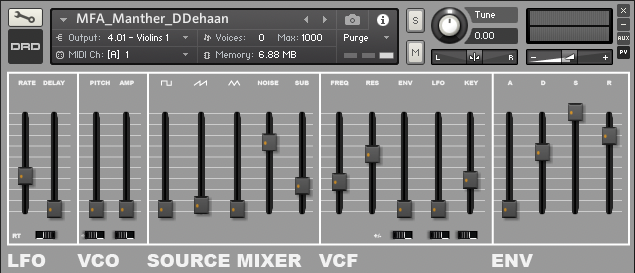
Note
Hint:
Save the “Patch Only” for your instrument and add a version number to the file name. This way, if you make a major mistake in the future you can alway jump back to a previous version of the instrument.
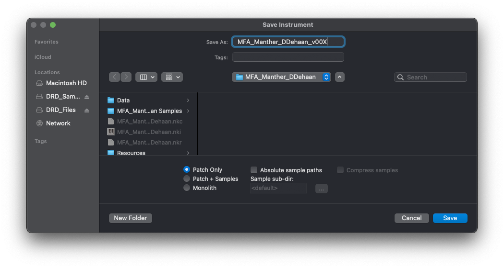
Preparing for Distribution
Note
However, developers ofter choose to clean up their instrument folder and reduce the size and accessibility of their samples before sending it out into the world.
Creating the .nkr (”Resources”) file.
Note
Return to the “Instrument Options” window and click the “Create” button near the bottom right corner of the “Instrument” tab.
Select the existing .nkr file within your instrument’s folder, then click “Save”.
When prompted, confirm that you want to replace the existing .nkr file.
You should then see a report that confirms that all four of our pictures and the script we had saved within the original Resource folder has been packaged inside of the new .nkr file.
You may now close the “Instrument Options” window and save your instrument.
To test that the new .nkr file has everything our instrument needs, we can change the name of the Resource folder to something else. I typically rename it to simply “_Resources”. Then reload your instrument. If your instrument looks the same, then everything worked correctly. If something doesn’t look correct, rename the “_Resources” folder back to “Resources” and try reloading your instrument then recreating the .nkr file.
Sample compression
Note
Then I’ll create a new folder with the name of my instrument. I’ll then place everything inside this folder that I plan to distribute with my instrument.
Back inside Kontakt save your instrument. This time, however, save it to the new folder that we just created and save both the Patch and the Samples. Also, check the box to have Kontakt compress all of your samples. This will both decrease the overall size of your samples, but also make it more difficult for someone to use your samples outside of your instrument.
Be certain that Kontakt has the instrument loaded that we just saved by first unloading the current instrument, and then reloading the new .nki file that you just saved by dragging and dropping it from a Finder window.
Next, copy and past the .nkr file from the “Build” folder into the new instrument’s folder.
Then in Kontakt, open the “Instrument Options” window again and change the referenced .nkr file to be the new copy that is located within the new instrument folder by clicking on the folder icon.
You can now resave your instrument, but be sure to only resave the patch. You do not need to save or compress the samples the again.
That’s it! You’re done 🎉
Note
But you are of course welcome to use this instrument in your music and to repurpose any parts of the script that you may find useful in the future.